EDIT WITH INTENT · FINISH WITH CONFIDENCE 컷을 고르는 판단부터 이미 편집할 줄 아는 제작자를 위한 원리·기능·문제 해결 사전. 여행·스케치·광고의 실제 장면으로 익히고, 모르는 순간 바로 찾아봅니다.
8부 · 83개 항목 HTML 본문 · 검색 6가지 조작 실험 2026.10.10 기준
처음에는 1부부터, 오늘의 문제는 문제별 색인 부터. 최종 워크플로우는 8부 에서 시작하세요.
두 종류의 업데이트를 구분합니다. 이 교재는 GitHub 수정·배포 후 같은 웹 주소에 반영됩니다. FCP와 Resolve의 작업은 기본 기능으로 실시간 동기화되지 않으며, 새 XML·새 렌더·검수·교체를 통해 업데이트합니다.
권장 학습 경로 범위 선별 → 시간 구조 → 정밀 트림 → 음악 구조 → 사운드 → 화면 전환 → 인트로·엔딩 → 왕복 방식 선택 → 한 곡 본편 실습
그림은 직접 만든 설명 도식입니다. 실제 앱 메뉴·하드웨어·언어 조건은 각 항목의 공식 안내와 설치 버전을 대조하세요. 앱을 직접 조작해 검증한 개인 프로젝트 기록과 혼동하지 않도록, 제안 실습은 별도로 표시합니다.
PART 1 · 01 / 83
이 책을 작업 중에 쓰는 방법 기본 컷편집 경험이 있는 여행·스케치·광고 제작자를 위한 편집 사전이다. 기능을 켜는 방법과 그 기능을 선택할 판단을 함께 배운다.
왜 이 방법을 쓰는가 처음에는 순서대로 읽고, 작업 중에는 증상이나 영문 기능명으로 검색한다. 각 항목의 실습은 복제 프로젝트에서 수행한다. 본문의 수치와 장면은 교육용 예시이며 정답 프리셋이 아니다.
직접 만든 원리 설명용 도식입니다. 실제 앱 화면이나 효과 출력의 복제본이 아닙니다. 실제 작업 순서 한 장면에서 문제가 무엇인지 한 문장으로 적는다. 그 문제에 대응하는 항목을 열고 원리를 읽는다. 같은 소재로 기존 방식과 새 방식을 비교한다. 수정 시간과 결과 차이를 기록한다. 장면으로 이해하기 부산 바다 영상이 지루하면 트랜지션부터 추가하지 말고 샷 크기, 컷 길이, 소리의 변화부터 진단한다.
막히거나 과해질 때 모든 기능을 쓰는 것이 목표가 아니다. 작업에 이득이 없는 기능은 빼도 된다.
직접 해볼 실습 · 완료 기준 기존 영상 15초에서 편집 판단 3개를 적고, 바꿀 판단 1개만 고른다.
기능의 메뉴·조건은 원문 안내 에서 설치 버전으로 확인하세요. 장면 예시·수치·실습·작업 방식의 선택은 이 교재의 제안입니다.
PART 1 · 02 / 83
최신 기능 지도: 11 → 12.4 2026년 10월 10일 확인한 Apple 공식 최신 안내는 Final Cut Pro for Mac 12.4다. 이 책은 Mac판을 기준으로 하며 설치 버전과 macOS에 따라 메뉴·조건이 다를 수 있다.
왜 이 방법을 쓰는가 11.0의 Magnetic Mask, 11.1의 기본 Adjustment Clip, 12.0의 Beat Detection·Transcript Search·Visual Search, 12.3의 Auto Mask·Edit Detection·새 Match Color를 실전에 연결한다. 12.4는 지원되는 Cinematic 촬영본의 초점·심도 조정과 수정 사항이 중심이다.
직접 만든 원리 설명용 도식입니다. 실제 앱 화면이나 효과 출력의 복제본이 아닙니다. 실제 작업 순서 Final Cut Pro 메뉴의 앱 정보에서 설치 버전을 확인한다. 새 기능은 해당 항목의 공식 링크와 시스템 요구사항을 함께 확인한다. 업데이트 전에 앱과 라이브러리의 이전 버전을 보관한다. 중요 프로젝트 전체 대신 10초 복제로 새 기능을 시험한다. 장면으로 이해하기 M3 Pro는 Apple silicon 조건을 충족하지만 언어·OS·촬영 포맷 조건까지 자동 충족하는 것은 아니다. Cinematic 조정은 일반 영상에 없는 심도 데이터를 만드는 기능이 아니다.
막히거나 과해질 때 자동 영어 자막이나 영어 대사 검색을 한국어 전체 지원으로 생각하지 않는다. 라이브러리 업그레이드 후 구버전에서 다시 열 수 있다고 가정하지 않는다.
직접 해볼 실습 · 완료 기준 자신의 버전에서 Beat Detection, Auto Mask, Adjustment Clip의 존재를 확인하고 미지원 기능은 표시한다.
기능의 메뉴·조건은 원문 안내 에서 설치 버전으로 확인하세요. 장면 예시·수치·실습·작업 방식의 선택은 이 교재의 제안입니다.
PART 1 · 03 / 83
Library·Event·Project를 구분하기 Library는 편집 데이터와 미디어의 관리 단위, Event는 소재·프로젝트를 묶는 단위, Project는 실제 편집 타임라인이다. 파일이 들어 있는 폴더와 화면에서 분류한 Event는 같은 개념이 아니다.
왜 이 방법을 쓰는가 찾기 편한 구조와 저장 위치를 따로 설계하면 영상이 늘어도 혼란이 적다. 한 여행을 한 Library로 시작하고 날짜나 장면별 Event를 쓰는 것은 관리하기 쉬운 출발점이다.
직접 만든 원리 설명용 도식입니다. 실제 앱 화면이나 효과 출력의 복제본이 아닙니다. 실제 작업 순서 Library를 만들고 이름에 프로젝트·연도를 넣는다. Event를 촬영일·소재·편집안 등 필요한 기준으로 나눈다. Project를 만들고 해상도·프레임률·색공간을 지정한다. 라이브러리 속성에서 미디어·캐시·백업 위치를 확인한다. 장면으로 이해하기 Busan_2026 Library 안에 Source·Selects·Edit Event를 만들고 Project는 Busan_FullSong_v001처럼 구분한다. 3~4분 한 곡 본편이 기본 작업 단위다. 원본은 공통 디스크의 01_ORIGINALS, FCP 라이브러리는 02_FCP에 둔다. Resolve가 FCP 라이브러리 패키지 내부를 뒤져 원본을 찾게 만들지 않는다.
막히거나 과해질 때 Event를 옮겼다고 디스크의 원본 파일도 같은 방식으로 이동한 것은 아니다. Library 파일 하나를 복사했다고 외부 미디어까지 포함됐다고 생각하지 않는다.
직접 해볼 실습 · 완료 기준 Library 안과 외부 디스크 중 원본이 어디 있는지 실제 Finder 위치까지 확인한다.
기능의 메뉴·조건은 원문 안내 에서 설치 버전으로 확인하세요. 장면 예시·수치·실습·작업 방식의 선택은 이 교재의 제안입니다.
PART 1 · 04 / 83
두 앱이 같은 원본을 찾게 하는 가져오기 FCP와 Resolve의 병행 작업은 같은 원본을 확실하게 참조하는 데서 시작한다. Event 분류는 FCP 편집 데이터이고, Resolve가 읽을 공통 폴더 구조와는 별개다.
왜 이 방법을 쓰는가 XML에는 편집 정보와 미디어 참조가 들어간다. 한 앱만 아는 원본 위치, 카드마다 반복되는 파일명, 서로 다른 프록시를 기준으로 삼으면 보정 이전에 재연결부터 틀어진다.
직접 만든 원리 설명용 도식입니다. 실제 앱 화면이나 효과 출력의 복제본이 아닙니다. 실제 Final Cut Pro 화면으로 확인 Apple 공식 가이드에서 가져온 실제 화면입니다. 이미지를 누르면 크게 볼 수 있습니다. 앱 버전·언어에 따라 표시가 다를 수 있습니다.
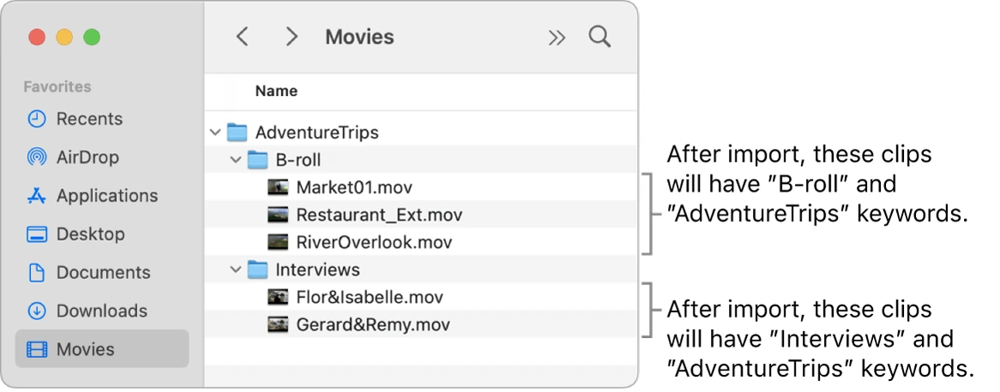
Finder의 카메라별 원본 폴더. FCP Event 분류와 디스크 폴더는 별개다.Apple 공식 Final Cut Pro 사용자 가이드의 실제 화면 · © Apple · 원문 ↗ 실제 작업 순서 프로젝트 루트 아래 01_ORIGINALS / 카메라 / 촬영일 / 카드 폴더를 만들고 원래 카드 구조를 보존한다. 작업용 원본과 별도 백업을 검증한다. FCP는 가능한 파일에서 Leave files in place로 공통 원본을 참조한다. 카드 포맷에 따라 이 옵션이 없으면 먼저 안전하게 가져오기·복사한 실제 미디어 위치를 기록한다. Resolve Media Pool에는 같은 검증된 원본을 넣는다. 원본 이름·경로·FPS·타임코드를 확인하고 중복 파일명은 폴더 및 메타데이터와 함께 식별한다. FCP Proxy와 Resolve Proxy·Cache는 별도 폴더에 둔다. 상대 앱의 프록시를 원본으로 잘못 conform하지 않는다. XML 전달·최종 반환 검수는 원본 기준으로 한다. XML·reference는 04_EXCHANGE/edit_v001, 색보정 렌더는 05_GRADED/grade_v001에 둔다. 수정은 v002 폴더로 전달하고 반영 상태를 기록한다. 짧은 3컷을 두 앱에서 읽고 FCPXML→Resolve→보정 렌더→FCP 교체까지 시험한 다음 전체 음악 길이의 본편을 편집한다. 장면으로 이해하기 시장의 Sony C0001과 해변의 Drone C0001은 서로 다른 샷이다. 공통 원본은 고정하고 FCP에서 CUT_014라는 편집 인스턴스 ID를 부여한다. 보정본은 CUT_014_g002.mov처럼 식별한다. CUT_014가 늘어났다면 색만 재사용할 수 있는지와 새 원본 범위가 필요한지를 따로 판단한다.
막히거나 과해질 때 공통 폴더와 같은 디스크를 쓴다고 편집이나 노드가 자동 동기화되지는 않는다. .fcpbundle·Resolve 데이터베이스·캐시를 두 앱이 같이 쓰게 만들지 않는다.
직접 해볼 실습 · 완료 기준 원본 3컷에 대해 두 앱의 실제 경로·FPS·시작 타임코드가 같음을 확인하고, 색 수정 1컷을 새 버전으로 반환·교체한다.
기능의 메뉴·조건은 원문 안내 에서 설치 버전으로 확인하세요. 장면 예시·수치·실습·작업 방식의 선택은 이 교재의 제안입니다.
PART 1 · 05 / 83
병행 작업 폴더와 업데이트 상태표 소재 관리부터 보정 반환까지 같은 버전 규칙을 사용한다. 같은 파일에 덮어쓰기보다 새 버전·완료 상태·명시적 교체로 갱신을 확인한다.
왜 이 방법을 쓰는가 두 앱을 열어 두고 작은 배치 단위로 왕복하면 수정 대기 시간을 줄일 수 있다. 그러나 앱 간 실시간 노드·컷 동기화 기능과는 다르다.
직접 만든 원리 설명용 도식입니다. 실제 앱 화면이나 효과 출력의 복제본이 아닙니다. 폴더와 담당 실제 작업 순서 01_ORIGINALS는 검증된 공통 원본, 02_FCP는 Library·전용 Cache·Proxy, 03_RESOLVE는 프로젝트 백업·전용 Cache·Proxy로 나눈다. 04_EXCHANGE/edit_v001에는 XML·reference·샷 목록·고위험 효과 처리표를 넣는다. 05_GRADED/grade_v001에는 완료된 보정 렌더만 전달한다. 상태는 요청→보정 중→렌더 완료→FCP 교체→비교 완료로 기록한다. 렌더 파일이 생성 중일 때 가져오지 않는다. 같은 컴퓨터에서는 공통 디스크 경로를 고정한다. 다른 컴퓨터에서는 복제 원본의 동일성을 확인하고 앱별 미디어 재연결을 한다. 색만 바꾸면 해당 샷 새 렌더, 컷·원본 범위가 바뀌면 새 XML과 변경 목록을 전달한다. 교체 후 음악 싱크·handles·이중 효과를 검수한다. 장면으로 이해하기 CUT_014 / edit_v003 / grade_g002 / FCP 반영 대기라는 한 줄이면 현재 본편이 어느 색 버전을 쓰는지 알 수 있다. 새 버전 폴더를 만들었다고 FCP의 기존 클립이 자동으로 새 파일을 읽는 것은 아니다.
막히거나 과해질 때 프로젝트 DB·라이브러리·캐시를 공유 폴더에서 무작정 같이 쓰지 않는다. 동일한 FCP Library를 여러 사람이 동시에 열어 편집하는 구조로 확대하지 않는다.
직접 해볼 실습 · 완료 기준 세 샷의 요청 버전과 현재 적용 버전을 표로 관리하고, 반영 완료한 샷만 체크한다.
기능의 메뉴·조건은 원문 안내 에서 설치 버전으로 확인하세요. 장면 예시·수치·실습·작업 방식의 선택은 이 교재의 제안입니다.
PART 1 · 06 / 83
해상도·FPS·시간코드의 출발점 타임라인 프레임률은 컷과 소리의 시간 기준이다. 24와 23.976, 30과 29.97은 비슷해 보여도 정확히 같지 않다. 4K라는 이름만으로 가로·세로 픽셀과 FPS가 정해지지 않는다.
왜 이 방법을 쓰는가 프로젝트를 만든 뒤 첫 클립의 설정에 무심코 맡기면 고속 촬영 FPS로 전체 편집이 시작될 수 있다. 왕복 작업은 양쪽 앱이 같은 시간 기준을 써야 한다.
직접 만든 원리 설명용 도식입니다. 실제 앱 화면이나 효과 출력의 복제본이 아닙니다. 실제 작업 순서 납품의 비율·해상도·FPS를 먼저 정한다. New Project에서 자동 설정 대신 필요한 형식을 확인한다. 클립 정보의 실제 FPS와 타임라인 FPS를 따로 적는다. 참조 출력에 타임라인 시간코드를 넣어 긴 왕복의 위치를 비교한다. 장면으로 이해하기 60fps 소니 클립을 24fps 여행 영상에서 느리게 쓸 수 있지만 타임라인까지 60fps로 해야 하는 것은 아니다. 23.976 소재는 실제 값으로 기록한다.
막히거나 과해질 때 출력 후 FPS만 바꿔서 모든 동작과 오디오 문제가 해결되지는 않는다. Drop-frame 시간코드는 표시 규칙이며 영상 프레임을 버리는 기능이 아니다.
직접 해볼 실습 · 완료 기준 고속 촬영 1개와 정상 촬영 1개를 같은 10초 타임라인에 넣고 원본·프로젝트 FPS를 기록한다.
기능의 메뉴·조건은 원문 안내 에서 설치 버전으로 확인하세요. 장면 예시·수치·실습·작업 방식의 선택은 이 교재의 제안입니다.
PART 1 · 07 / 83
브라우저 선편집: 범위·즐겨찾기·키워드 범위 선택은 한 파일에서 실제로 쓸 몇 초를 고르는 작업이다. 전체 파일을 타임라인에 놓고 자르는 것보다 후보의 의미가 분명해진다.
왜 이 방법을 쓰는가 카메라 출처와 샷 내용은 별도 축이다. SONY는 출처, BEACH는 장소, DETAIL은 샷 역할이며 한 구간에 여러 키워드를 붙일 수 있다.
직접 만든 원리 설명용 도식입니다. 실제 앱 화면이나 효과 출력의 복제본이 아닙니다. 실제 작업 순서 브라우저에서 I와 O로 사용할 범위를 정한다. F로 즐겨찾기에 추가하고 키워드 편집기에서 의미를 부여한다. Favorites 필터와 Smart Collection으로 필요한 범위를 모은다. 선택 범위를 E로 러프컷에 추가한다. 장면으로 이해하기 30초 카페 클립에서 문 열기 2초, 커피 붓기 3초만 즐겨찾기로 남긴다. 카페라는 파일명보다 OPENING·DETAIL 키워드가 편집 목적을 더 잘 설명한다.
막히거나 과해질 때 짧게 보이는 좋은 동작만 고르면 앞뒤 handles가 없어진다. 사용할 지점 주변의 여유와 움직임 방향도 확인한다.
직접 해볼 실습 · 완료 기준 30개 클립에서 12개 범위를 선별하고 다음 날 수중 인물 범위를 20초 안에 찾는다.
기능의 메뉴·조건은 원문 안내 에서 설치 버전으로 확인하세요. 장면 예시·수치·실습·작업 방식의 선택은 이 교재의 제안입니다.
PART 1 · 08 / 83
검색: 메타데이터·Transcript·Visual 이름·노트·마커 검색은 내가 기록한 정보를 찾고, Transcript Search는 분석된 영어 대사, Visual Search는 영상 속 물체·행동을 찾는다. 검색은 선별을 돕는 후보 찾기다.
왜 이 방법을 쓰는가 12.0부터 Transcript·Visual 검색이 추가됐다. Apple silicon 조건과 백그라운드 분석 상태를 확인한다. Compound는 이 두 검색의 분석 대상이 아니며 원본에서 검색하는 편이 명확하다.
직접 만든 원리 설명용 도식입니다. 실제 앱 화면이나 효과 출력의 복제본이 아닙니다. 실제 작업 순서 브라우저에서 검색할 Library나 Event를 선택한다. 검색창의 범주를 Names, Notes, Transcript, Visual 중 목적에 맞춘다. Visual에 간단한 물체·행동 설명을 넣고 후보를 직접 재생한다. 확정한 구간만 즐겨찾기와 키워드로 남긴다. 장면으로 이해하기 바닷가에서 걷는 사람 후보를 Visual로 찾은 뒤, 흔들림·초점·동작을 직접 확인한다. 검색 결과 자체가 좋은 편집 구간이라는 뜻은 아니다.
막히거나 과해질 때 영어 대사 검색을 한국어 전사로 설명하지 않는다. 검색 결과가 없으면 먼저 분석 여부와 검색 범위를 확인한다.
직접 해볼 실습 · 완료 기준 같은 소재를 파일명 검색과 Visual 검색으로 각각 찾아 시간과 누락을 비교한다.
기능의 메뉴·조건은 원문 안내 에서 설치 버전으로 확인하세요. 장면 예시·수치·실습·작업 방식의 선택은 이 교재의 제안입니다.
PART 1 · 09 / 83
Proxy·Optimized·원본과 재생 성능 Proxy는 편집용으로 가벼운 미디어, Optimized는 편집 처리에 유리한 중간 미디어다. 원본은 촬영 데이터이며 세 가지는 동일한 역할을 하지 않는다.
왜 이 방법을 쓰는가 H.264/HEVC는 파일이 작아도 디코딩 부담이 크다. M3 Pro에서도 여러 고해상도 클립·노이즈 제거·마스크가 겹치면 Proxy와 효과 분리가 도움이 된다.
직접 만든 원리 설명용 도식입니다. 실제 앱 화면이나 효과 출력의 복제본이 아닙니다. 실제 Final Cut Pro 화면으로 확인 Apple 공식 가이드에서 가져온 실제 화면입니다. 이미지를 누르면 크게 볼 수 있습니다. 앱 버전·언어에 따라 표시가 다를 수 있습니다.
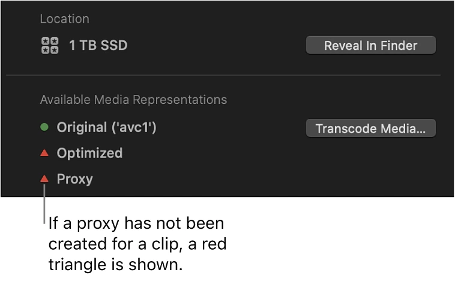
Info Inspector의 빨간 삼각형은 해당 프록시가 없음을 나타낸다. 원본과 프록시 상태를 먼저 확인한다.Apple 공식 Final Cut Pro 사용자 가이드의 실제 화면 · © Apple · 원문 ↗ 실제 작업 순서 필요한 클립을 선택하고 File > Transcode Media에서 Proxy를 만든다. Viewer의 Media Playback을 Proxy 우선 또는 Proxy Only로 바꾼다. 편집 후 Optimized/Original로 전환하고 누락을 확인한다. 왕복 전달은 Proxy가 아니라 의도한 원본 또는 보정용 렌더를 연결한다. 장면으로 이해하기 이동 중에는 낮은 해상도 Proxy로 선별하고 집에서는 원본으로 색·마스크 경계를 검수한다. 12.3부터 새 압축 Proxy 생성은 HEVC가 사용되며 ProRes Proxy 옵션과 구분한다. 병행 작업에서는 FCP 프록시와 Resolve 프록시·캐시를 분리한다. 상대 앱에서 XML을 conform할 때 어떤 파일이 원본인지 먼저 확인한다.
막히거나 과해질 때 Proxy 화면에서 피부·그레인·수중 밴딩의 최종 품질을 판단하지 않는다. 라이브러리 백업에도 외부 원본이 자동 포함되는 것은 아니다.
직접 해볼 실습 · 완료 기준 같은 10초 구간의 원본·Proxy 재생을 비교하고 최종 출력 전 원본 전환을 확인한다.
기능의 메뉴·조건은 원문 안내 에서 설치 버전으로 확인하세요. 장면 예시·수치·실습·작업 방식의 선택은 이 교재의 제안입니다.
PART 2 · 10 / 83
자석 타임라인: 시간 구조와 연결 관계 Primary Storyline은 주 흐름, Connected Clip은 그 흐름의 한 지점에 연결된 요소다. 위아래 위치는 일반 트랙처럼 보이지만 어떤 컷에 붙어 있는지가 이동 결과를 결정한다.
왜 이 방법을 쓰는가 여행 장면을 옮길 때 현장음은 따라와야 하고 전체 음악은 유지돼야 할 수 있다. 편집 전에 각 요소의 연결 목적을 정한다.
직접 만든 원리 설명용 도식입니다. 실제 앱 화면이나 효과 출력의 복제본이 아닙니다. 실제 작업 순서 세 컷을 Primary Storyline에 배치한다. 현장음·타이틀을 해당 장면에 연결한다. 가운데 컷을 이동하며 무엇이 함께 움직이는지 본다. 음악처럼 독립 기준이 필요한 요소의 연결점을 확인한다. 장면으로 이해하기 커피 컷에 커피 소리를 연결하면 장면을 옮겨도 소리가 함께 온다. 음악이 실수로 그 컷에 연결되면 전체 음악 기준까지 이동할 수 있다.
막히거나 과해질 때 소리가 틀어졌을 때 매번 위치만 고치면 재발한다. 먼저 연결점을 보며 구조를 고친다. 연결점 이동은 해당 명령·도구를 공식 문서에서 확인해 복제본으로 시험한다.
직접 해볼 실습 · 완료 기준 세 컷·현장음·음악·타이틀을 만들고 컷 이동 전에 결과를 예측한다.
기능의 메뉴·조건은 원문 안내 에서 설치 버전으로 확인하세요. 장면 예시·수치·실습·작업 방식의 선택은 이 교재의 제안입니다.
PART 2 · 11 / 83
Secondary Storyline·Gap·Position 도구 여러 연결 클립을 Secondary Storyline으로 묶으면 그 안에서 컷·트랜지션 관계를 다루기 쉽다. Gap은 의도된 빈 시간, Position 도구는 자석 이동 대신 특정 위치에 배치할 때 쓰는 도구다.
왜 이 방법을 쓰는가 연결 클립을 모두 Compound로 묶기 전에 타임라인 위에 보이는 작은 이야기 단위로 충분한지 판단한다. Gap은 검정 타이틀로 덮는 방식과 시간 구조가 다르다.
직접 만든 원리 설명용 도식입니다. 실제 앱 화면이나 효과 출력의 복제본이 아닙니다. 실제 작업 순서 연결 클립들을 선택해 Create Storyline 명령으로 묶는다. 내부 컷에 트랜지션을 적용하고 한 단위로 이동한다. Option-W로 Gap을 넣어 의도한 빈 시간을 만든다. P와 A의 이동 결과를 같은 복제 구간에서 비교한다. 장면으로 이해하기 드롭 직전 12프레임 검정과 효과음을 넣고 다음 장면을 강조한다. 검정은 음악의 시간을 없애는 것이 아니라 그 시간에 화면이 없는 연출이다.
막히거나 과해질 때 Position으로 무심코 덮어쓰면 원래 컷이 사라질 수 있다. 도구가 P인지 A인지, 놓는 위치가 어디인지 확인한다.
직접 해볼 실습 · 완료 기준 검정 12프레임을 추가했다가 삭제하고 타이틀·음악 싱크가 어떻게 변하는지 적는다.
기능의 메뉴·조건은 원문 안내 에서 설치 버전으로 확인하세요. 장면 예시·수치·실습·작업 방식의 선택은 이 교재의 제안입니다.
PART 2 · 12 / 83
Append·Insert·Connect·Overwrite·Replace E는 끝에 추가, W는 삽입, Q는 연결이라는 기본 매핑이다. Overwrite는 기존 시간을 덮고 Replace는 선택한 컷을 다른 소재로 바꾸는 작업이다.
왜 이 방법을 쓰는가 편집 명령은 길이와 연결 관계를 다르게 바꾼다. 이미 리듬이 정해진 자리에 새 컷을 끼워 넣을 때 W를 쓰면 뒤 컷이 밀릴 수 있다.
직접 만든 원리 설명용 도식입니다. 실제 앱 화면이나 효과 출력의 복제본이 아닙니다. 실제 작업 순서 브라우저 범위를 선택한 뒤 E로 러프컷을 만든다. B-roll은 Q로 연결해 본다. 중간에 정보를 추가할 때 W의 길이 변화를 확인한다. 같은 자리의 대안 컷은 Replace 옵션의 시작·끝·길이 조건을 확인한다. 장면으로 이해하기 3분 30초 음악을 통째로 놓고 도입·첫 전개·후렴·브레이크·재상승·종결 마커를 만든다. 각 구간에 공간·인물·행동이 드러나는 후보 컷을 배치해 한 곡 본편의 골격부터 완성한다. 인트로 효과는 이 골격 위에 얹는다.
막히거나 과해질 때 선택 범위와 타임라인 포커스가 잘못되면 의도하지 않은 편집이 생긴다. 단축키는 사용자 Command Set에서 바뀔 수 있다.
직접 해볼 실습 · 완료 기준 한 자리의 컷을 삽입·덮기·교체로 각각 바꿔 전체 길이와 후속 컷 위치를 비교한다.
기능의 메뉴·조건은 원문 안내 에서 설치 버전으로 확인하세요. 장면 예시·수치·실습·작업 방식의 선택은 이 교재의 제안입니다.
PART 2 · 13 / 83
Ripple: 길이와 뒤쪽 시간을 함께 바꾸기 Ripple 트림은 클립 한쪽 경계를 바꾸며 Primary Storyline의 뒤쪽 흐름을 당기거나 민다. 이야기의 전체 길이를 줄일 때 자연스럽다.
왜 이 방법을 쓰는가 끝 동작이 불필요한 컷을 1초 줄이면 뒤 컷도 1초 앞당겨진다. 이미 맞춰 둔 뒤쪽 음악 악센트는 다시 검수해야 한다.
직접 만든 원리 설명용 도식입니다. 실제 앱 화면이나 효과 출력의 복제본이 아닙니다. 실제 작업 순서 A 또는 T 도구로 클립 한쪽 끝을 선택한다. 끝을 짧게 움직이며 뒤 컷과 연결 요소의 이동을 관찰한다. 큰 수정 후 전체 길이와 음악의 구조 지점을 확인한다. 원본의 앞뒤 여유가 허용하는 범위에서 늘린다. 장면으로 이해하기 카페에서 컵을 놓은 뒤 멈춘 1초를 줄이면 장면 흐름이 빨라진다. 음악의 드롭 시간이 고정돼 있다면 다른 컷에서 시간을 보상하거나 Roll을 검토한다.
막히거나 과해질 때 모든 컷의 끝을 조금씩 줄이면 뒤쪽 싱크가 누적 변화한다. 한 컷의 문제인지 전체 페이스 문제인지 먼저 구분한다.
직접 해볼 실습 · 완료 기준 3초·3초·3초 컷에서 앞 컷을 1초 줄이고 총 길이가 8초가 되는지 본다.
기능의 메뉴·조건은 원문 안내 에서 설치 버전으로 확인하세요. 장면 예시·수치·실습·작업 방식의 선택은 이 교재의 제안입니다.
PART 2 · 14 / 83
Roll: 전체 길이는 유지하며 경계 이동 Roll은 붙어 있는 두 컷 사이 경계를 옮긴다. 한 컷이 길어지는 만큼 다른 컷이 짧아져 뒤쪽 위치는 유지된다.
왜 이 방법을 쓰는가 같은 6초 안에서 준비 동작을 줄이고 결과 장면을 더 보여주고 싶을 때 유용하다. 뒤쪽 드롭을 보존하면서 내부 배분만 바꿀 수 있다.
직접 만든 원리 설명용 도식입니다. 실제 앱 화면이나 효과 출력의 복제본이 아닙니다. 실제 작업 순서 T 도구를 선택하고 인접 경계의 양쪽 트림 표시를 확인한다. 경계를 왼쪽 또는 오른쪽으로 이동한다. 두 컷의 원본 여유와 동작 연결을 두 화면으로 비교한다. 전체 길이가 바뀌지 않았는지 확인한다. 장면으로 이해하기 문 열기 3초와 카페 내부 3초에서 경계를 0.5초 앞당기면 문은 2.5초, 내부는 3.5초가 된다. 다만 해당 경계가 강박이었다면 그 경계의 비트 싱크는 달라진다.
막히거나 과해질 때 Roll이 모든 음악 싱크를 지키는 것은 아니다. 뒤쪽 위치와 이동한 경계를 구분한다. 원본 여유가 없으면 이동이 막힌다.
직접 해볼 실습 · 완료 기준 같은 6초를 두 배분으로 만들고 관객이 정보를 이해하는 시간을 비교한다.
기능의 메뉴·조건은 원문 안내 에서 설치 버전으로 확인하세요. 장면 예시·수치·실습·작업 방식의 선택은 이 교재의 제안입니다.
PART 2 · 15 / 83
Slip: 컷 위치·길이를 고정하고 내용 바꾸기 Slip은 타임라인의 컷 시작·끝을 그대로 두고 그 안에 보이는 원본 구간을 옮긴다. 음악 경계를 보존하며 동작 정점을 바꾸는 핵심 도구다.
왜 이 방법을 쓰는가 파도 컷이 정확히 2초인데 최고점이 너무 빨리 나오면 컷을 지우고 새로 넣지 않고 사용 구간만 조절할 수 있다.
직접 만든 원리 설명용 도식입니다. 실제 앱 화면이나 효과 출력의 복제본이 아닙니다. 실제 작업 순서 T 도구에서 클립 가운데를 드래그한다. 타임라인 경계가 그대로인지 확인한다. 두 화면의 새 시작·끝을 보며 원본 구간을 이동한다. 음악을 켜고 동작 정점과 악센트를 검수한다. 장면으로 이해하기 0~2초에 배치된 파도 컷의 원본 10~12초를 11~13초로 바꾸면 경계는 그대로지만 파도의 순간이 달라진다. 추가 원본 구간인 handles가 필요하다.
막히거나 과해질 때 끝 여유가 없는 클립은 Slip 범위가 제한된다. 느리게 만든 컷은 원본 시간과 타임라인 시간이 다르므로 보이는 결과로 판단한다.
직접 해볼 실습 · 완료 기준 비트에 맞춘 4컷에서 세 번째 컷의 경계를 한 프레임도 움직이지 않고 동작만 바꾼다.
기능의 메뉴·조건은 원문 안내 에서 설치 버전으로 확인하세요. 장면 예시·수치·실습·작업 방식의 선택은 이 교재의 제안입니다.
PART 2 · 16 / 83
Slide: 선택 컷 길이를 유지하며 자리 이동 Slide는 선택 컷의 길이와 사용 구간을 유지한 채 시간상 위치를 옮기고, 양옆 컷을 늘리거나 줄여 전체 구간 길이를 보존한다.
왜 이 방법을 쓰는가 클로즈업 2초를 조금 늦게 시작하게 하되 전체 10초 구간은 바꾸고 싶지 않을 때 쓴다. Slip은 내용 이동, Slide는 자리 이동이다.
직접 만든 원리 설명용 도식입니다. 실제 앱 화면이나 효과 출력의 복제본이 아닙니다. 실제 작업 순서 T 도구에서 Option을 누르고 컷 가운데를 드래그한다. 양옆 컷의 길이가 보상되는지 본다. 선택 컷의 길이와 사용 구간은 그대로인지 확인한다. 양옆 컷의 원본 여유와 새 경계의 비트를 검수한다. 장면으로 이해하기 손이 컵을 잡는 컷을 0.5초 뒤로 옮기면 앞 컷이 늘고 뒤 컷이 줄어든다. 세 컷 묶음의 시작·끝은 그대로지만 내부 두 경계는 이동한다.
막히거나 과해질 때 Slide도 내부 비트 경계를 자동 유지하지 않는다. 선택 컷을 한 쪽 끝에 두었거나 이웃에 여유가 없으면 제한된다.
직접 해볼 실습 · 완료 기준 Ripple·Roll·Slip·Slide 중 어느 도구인지 먼저 말한 뒤 같은 3컷에서 각각 실행한다.
기능의 메뉴·조건은 원문 안내 에서 설치 버전으로 확인하세요. 장면 예시·수치·실습·작업 방식의 선택은 이 교재의 제안입니다.
PART 2 · 17 / 83
두 화면 트림·프레임 검수·스내핑 타임라인 축소 화면에서 1프레임은 거의 보이지 않는다. 두 화면 비교와 프레임 이동은 동작의 끝·시선·컷 순간을 정확히 확인하게 한다.
왜 이 방법을 쓰는가 N의 Snapping은 마커나 경계에 붙도록 돕지만 편집 판단을 대신하지 않는다. 스내핑이 너무 강하면 잠시 끄고 프레임 단위로 미세 조정한다.
직접 만든 원리 설명용 도식입니다. 실제 앱 화면이나 효과 출력의 복제본이 아닙니다. 실제 Final Cut Pro 화면으로 확인 Apple 공식 가이드에서 가져온 실제 화면입니다. 이미지를 누르면 크게 볼 수 있습니다. 앱 버전·언어에 따라 표시가 다를 수 있습니다.
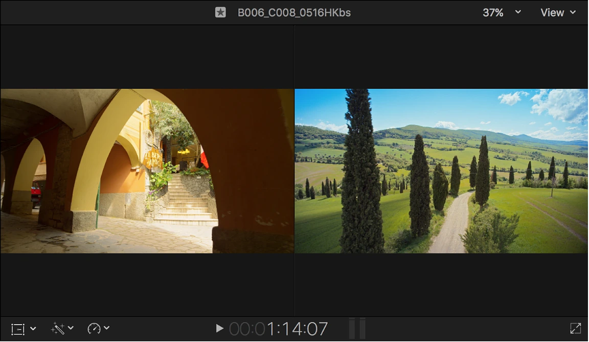
실제 two-up Viewer. 컷 양쪽 프레임을 동시에 보며 나가는 동작과 들어오는 동작을 비교한다.Apple 공식 Final Cut Pro 사용자 가이드의 실제 화면 · © Apple · 원문 ↗ 실제 작업 순서 필요한 구간을 확대하고 두 화면 트림 표시를 켠다. 경계 앞뒤를 한 프레임씩 살펴본다. 동작이 끊기거나 중복되는 지점을 수정한다. 12.3 이후 지속되는 두 화면 트림 기능도 설치 버전에서 확인한다. 장면으로 이해하기 컵 내려놓기 다음 클로즈업에서 컵이 다시 올라가는 프레임이 보이면 역방향 동작처럼 느껴진다. 경계 양쪽의 동작 단계부터 맞춘다.
막히거나 과해질 때 확대가 너무 작으면 1프레임 검수가 어렵고, 확대가 너무 크면 전체 페이스를 잃는다. 세밀하게 수정한 후 정상 속도로 돌아와 본다.
직접 해볼 실습 · 완료 기준 동작 연결 5개를 찾아 경계 앞뒤 프레임과 정상 재생 결과를 비교한다.
기능의 메뉴·조건은 원문 안내 에서 설치 버전으로 확인하세요. 장면 예시·수치·실습·작업 방식의 선택은 이 교재의 제안입니다.
PART 2 · 18 / 83
J-cut·L-cut: 소리와 화면의 경계 나누기 J-cut은 다음 장면 소리가 화면보다 먼저, L-cut은 이전 장면 소리가 화면 이후까지 이어지는 편집이다. 문자 모양보다 관객이 정보를 받는 순서가 핵심이다.
왜 이 방법을 쓰는가 카페 밖에서 내부 소리를 먼저 들려주면 다음 공간을 예상한다. 수중에서 지상 장면으로 나오며 물소리를 잠시 남기면 경험이 이어진다.
직접 만든 원리 설명용 도식입니다. 실제 앱 화면이나 효과 출력의 복제본이 아닙니다. 실제 작업 순서 클립의 오디오를 확장해 영상·오디오 경계를 따로 보이게 한다. 연결을 유지한 채 소리 시작·끝을 조절한다. 0.2~0.8초 정도의 짧은 이동부터 비교한다. 작은 페이드로 클릭을 제거하고 실제 장면 전환을 듣는다. 장면으로 이해하기 해변 화면 끝에서 카페 잔 부딪치는 소리를 먼저 들려주고 카페로 컷한다. 장면의 장소가 다르면 너무 긴 겹침은 공간을 혼동시킬 수 있다.
막히거나 과해질 때 필요 없이 오디오를 Detach하면 영상과의 싱크 관리가 복잡해진다. 가능한 오디오 확장으로 해결하고 분리가 꼭 필요한지 판단한다.
직접 해볼 실습 · 완료 기준 같은 8초를 동시 컷·J-cut·L-cut으로 만들고 가장 자연스러운 전환을 고른다.
기능의 메뉴·조건은 원문 안내 에서 설치 버전으로 확인하세요. 장면 예시·수치·실습·작업 방식의 선택은 이 교재의 제안입니다.
PART 2 · 19 / 83
샷 역할·시선·동작·공간을 이어 붙이기 와이드는 장소, 미디엄은 행동, 클로즈업은 감각과 정보를 전달한다. 연속 무빙을 나열하는 것과 관객에게 필요한 순서로 보여주는 것은 다르다.
왜 이 방법을 쓰는가 카메라 움직임이 같은 컷만 이어지면 변화가 줄어든다. 샷 크기·정지와 이동·빛·소리의 대비가 있어야 한 컷의 움직임도 살아난다.
직접 만든 원리 설명용 도식입니다. 실제 앱 화면이나 효과 출력의 복제본이 아닙니다. 실제 작업 순서 각 컷에 장소·행동·디테일·반응 중 역할을 적는다. 시선과 이동 방향이 이어지는 컷을 골라 러프컷을 만든다. 설명 없는 장면이 있는지 음악을 끄고 본다. 움직임 최고점과 완성된 동작 중 어느 순간에 자를지 비교한다. 장면으로 이해하기 부산 도입은 도시 와이드, 이동 미디엄, 바다 디테일, 인물 반응으로 구성할 수 있다. 동작 매치는 발 내딛기와 파도 밀려오기를 의미상 연결하는 방식도 가능하다.
막히거나 과해질 때 180도 규칙이나 방향 일치를 무조건 지키는 공식으로 보지 않는다. 공간 혼란을 의도할 수도 있지만 그 의도가 관객에게 전달되는지 확인한다.
직접 해볼 실습 · 완료 기준 무빙 5컷만 쓴 버전과 정지·클로즈업을 섞은 버전을 만들어 대비를 비교한다.
기능의 메뉴·조건은 원문 안내 에서 설치 버전으로 확인하세요. 장면 예시·수치·실습·작업 방식의 선택은 이 교재의 제안입니다.
PART 2 · 20 / 83
Audition·Compound·Multicam·Snapshot Audition은 같은 자리의 후보 비교, Compound는 여러 요소를 한 단위로 묶기, Multicam은 동기화된 앵글 전환에 쓴다. Snapshot은 참조된 부모 클립의 관계를 보존하는 버전 관리에 유용하다.
왜 이 방법을 쓰는가 같은 장소에서 다른 시간에 찍은 드론·지상 컷은 멀티캠 동기화 대상이 아니다. 여러 컷을 묶을 때는 수정이 공유될 범위까지 생각한다.
직접 만든 원리 설명용 도식입니다. 실제 앱 화면이나 효과 출력의 복제본이 아닙니다. 실제 작업 순서 한 자리의 컷 후보를 Audition으로 비교한다. 타이틀·컷·효과음의 재사용 단위를 Compound로 묶는다. 공유 부모의 내부를 수정하면 다른 사용처에 반영되는지 시험한다. 중요 분기 전에 Duplicate Project as Snapshot을 만든다. 장면으로 이해하기 오프닝 Compound를 두 프로젝트에서 공유하면 안쪽 타이틀 수정이 양쪽에 반영될 수 있다. 독립 버전은 새 부모 클립 또는 Snapshot 구조를 확인한다.
막히거나 과해질 때 단순 프로젝트 복제가 모든 공유 Compound·Multicam을 독립시키지는 않는다. Snapshot도 원본 미디어 전체를 새로 복사하는 백업은 아니다.
직접 해볼 실습 · 완료 기준 두 프로젝트에 같은 Compound를 넣고 일반 복제와 Snapshot의 변경 전파를 비교한다.
기능의 메뉴·조건은 원문 안내 에서 설치 버전으로 확인하세요. 장면 예시·수치·실습·작업 방식의 선택은 이 교재의 제안입니다.
PART 2 · 21 / 83
멀티캠과 외부 오디오 동기화 동일한 순간을 여러 카메라로 찍었을 때 Multicam은 앵글을 같은 시간에 맞춰 선택하게 한다. 외부 녹음의 Synced Clip은 영상과 별도 소리를 하나의 편집 대상으로 만든다.
왜 이 방법을 쓰는가 동기화 방법은 타임코드·오디오 파형·수동 기준점 등이다. 서로 다른 시간에 찍은 비슷한 장면을 오디오 자동 분석으로 맞출 수는 없다.
직접 만든 원리 설명용 도식입니다. 실제 앱 화면이나 효과 출력의 복제본이 아닙니다. 실제 작업 순서 카메라 이름과 앵글 정보를 정리한다. 같은 이벤트를 찍은 클립을 선택해 멀티캠 또는 동기화 클립을 만든다. Angle Editor에서 박수·말소리·동작의 순간을 확인한다. 길게 녹음한 소재는 끝부분도 확인해 드리프트를 점검한다. 장면으로 이해하기 소니와 액션캠으로 공연을 동시에 찍었다면 파형 기준으로 시작을 맞춘다. 드론에는 쓸 오디오가 없을 수 있어 공통 시각 기준이나 기록된 시간을 사용한다.
막히거나 과해질 때 시작만 맞고 끝이 틀어지는 문제는 단순 시작 위치 이동으로 해결되지 않을 수 있다. FPS·녹음 클럭·가변 프레임률 여부를 확인한다.
직접 해볼 실습 · 완료 기준 같은 박수 3번을 두 소스로 찍어 앞·중간·끝에서 1프레임 수준의 싱크를 비교한다.
기능의 메뉴·조건은 원문 안내 에서 설치 버전으로 확인하세요. 장면 예시·수치·실습·작업 방식의 선택은 이 교재의 제안입니다.
PART 3 · 22 / 83
Beat Detection: 자동 박자 분석 활용 12.0 이후 Beat Detection은 음악을 분석해 구간·마디·박자 그리드를 보여준다. 자동으로 좋은 컷을 고르고 몽타주를 완성하는 기능과는 다르다.
왜 이 방법을 쓰는가 구버전 교재의 수동 M 마커 방식도 유효하지만 이제 자동 그리드를 먼저 확인할 수 있다. 4/4 음악을 기준으로 시작하면 분석과 실제 박자의 비교가 쉽다.
직접 만든 원리 설명용 도식입니다. 실제 앱 화면이나 효과 출력의 복제본이 아닙니다. 실제 Final Cut Pro 화면으로 확인 Apple 공식 가이드에서 가져온 실제 화면입니다. 이미지를 누르면 크게 볼 수 있습니다. 앱 버전·언어에 따라 표시가 다를 수 있습니다.
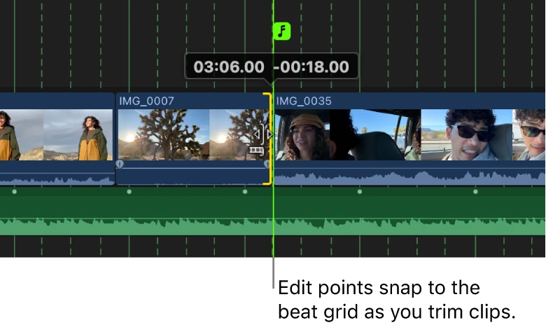
박자 기준으로 음악 범위를 트림하는 화면. 자동 분석 결과는 귀로 검수한다.Apple 공식 Final Cut Pro 사용자 가이드의 실제 화면 · © Apple · 원문 ↗ 실제 작업 순서 타임라인에서 음악 클립을 선택한다. Clip > Enable Beat Detection 또는 Option-B를 실행한다. 타임라인 확대 정도를 바꿔 구간·마디·박자를 확인한다. N으로 스내핑을 켜고 핵심 경계를 맞춘다. 0으로 그리드를 숨기거나 다시 표시하며 화면 흐름을 본다. 장면으로 이해하기 드롭에는 큰 장면 변화를, 마디 시작에는 샷 크기 변화를, 약한 박에는 인물 동작을 둘 수 있다. 모든 점에 컷을 넣으면 자동 그리드가 영상의 다양성을 줄이는 셈이다.
막히거나 과해질 때 실제 킥·스네어·변박과 분석 결과가 다를 수 있다. 템포가 변하거나 4/4가 아닌 곡은 귀로 확인하고 마커를 보완한다.
직접 해볼 실습 · 완료 기준 같은 15초를 자동 그리드 활용과 수동 핵심 마커 방식으로 편집해 시간과 리듬을 비교한다.
기능의 메뉴·조건은 원문 안내 에서 설치 버전으로 확인하세요. 장면 예시·수치·실습·작업 방식의 선택은 이 교재의 제안입니다.
PART 3 · 23 / 83
박자·프레이즈·드롭과 컷 길이 설계 박은 맥박, 마디는 박의 묶음, 프레이즈는 음악적 문장이다. 큰 구조를 먼저 잡으면 짧은 컷은 이유를 갖는다.
왜 이 방법을 쓰는가 120BPM에서 한 박은 0.5초이고 4/4 한 마디는 2초다. 4마디는 8초지만 모든 음악의 구간이 이 길이인 것은 아니다. 프레임 반올림도 긴 구간에서는 검수한다.
직접 만든 원리 설명용 도식입니다. 실제 앱 화면이나 효과 출력의 복제본이 아닙니다. 실제 작업 순서 먼저 도입·상승·드롭·마무리 구간을 듣고 표시한다. 샷 길이를 길게·중간·짧게 섞어 긴장 변화를 만든다. 강박 컷뿐 아니라 동작 정점이 비트에 오는 버전도 만든다. 음악을 꺼도 장면이 읽히는지 확인한다. 장면으로 이해하기 인물 점프 컷의 경계는 비트 앞에 두고 착지 순간을 비트에 맞출 수 있다. 관객이 느끼는 악센트는 반드시 컷 순간과 같지 않다.
막히거나 과해질 때 BPM 수치만으로 전체 마커를 계산하면 템포 변화와 오프비트를 놓친다. 4/8마디 규칙을 기계적으로 적용하지 않는다.
직접 해볼 실습 · 완료 기준 20초에서 컷 10개와 5개 버전을 만든 뒤 어느 컷의 정보가 너무 짧게 보이는지 적는다.
기능의 메뉴·조건은 원문 안내 에서 설치 버전으로 확인하세요. 장면 예시·수치·실습·작업 방식의 선택은 이 교재의 제안입니다.
PART 3 · 24 / 83
한 곡 전체·연장·두 곡 이상을 구성하기 기본은 3~4분 정도의 음악 한 곡 전체를 사용하는 본편이다. 음악을 줄이는 작업뿐 아니라 장면을 더 담기 위한 연장과 두 곡 이상의 연결도 음악의 문장을 유지해야 한다.
왜 이 방법을 쓰는가 컷마다 비트를 맞추는 것과 한 편의 흐름을 만드는 것은 다르다. 프레이즈·코드·보컬·악기 밀도·종결음을 기준으로 음악 지도를 만들면 장면의 역할과 길이가 자연스럽게 정해진다.
직접 만든 원리 설명용 도식입니다. 실제 앱 화면이나 효과 출력의 복제본이 아닙니다. 실제 Final Cut Pro 화면으로 확인 Apple 공식 가이드에서 가져온 실제 화면입니다. 이미지를 누르면 크게 볼 수 있습니다. 앱 버전·언어에 따라 표시가 다를 수 있습니다.
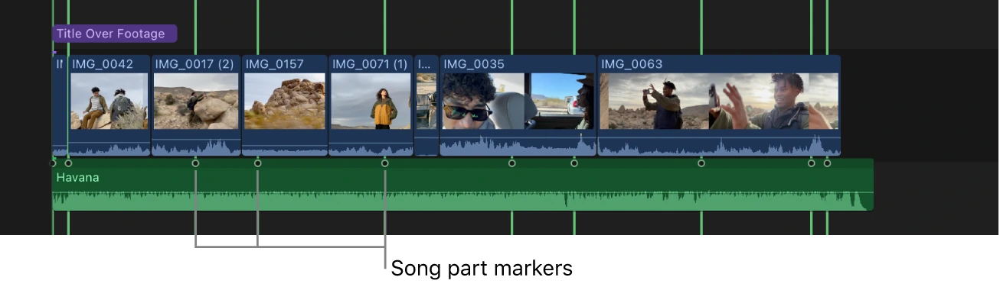
음악을 넓게 본 화면의 구간 표시. 전체 곡의 전개를 먼저 읽는다.Apple 공식 Final Cut Pro 사용자 가이드의 실제 화면 · © Apple · 원문 ↗ 실제 작업 순서 먼저 음악 전체를 듣고 도입·전개·후렴·브레이크·재상승·끝을 마커로 적는다. 박자 그리드와 곡의 큰 구간을 구분한다. 원곡 길이대로 러프컷을 만든다. 인물의 행동·현장음·긴 와이드를 배치할 곳을 음악의 밀도가 낮은 구간에서 찾는다. 연장은 보컬 문장 중간보다 반복 가능한 4·8마디 악기 구간을 후보로 삼는다. 시작과 끝의 코드·베이스·잔향이 이어지는지 듣고 반복 티를 확인한다. 두 번째 곡은 첫 곡의 종결 뒤에 새 챕터로 시작하거나, 현장음 브리지로 공간을 바꾼다. 비트를 겹칠 때는 BPM·박 위치·조성이 맞는지 먼저 확인한다. 잔향 꼬리를 남기거나 짧은 페이드로 클릭을 제거한다. 두 곡의 킥·베이스가 겹쳐 탁해지면 동시에 큰 소리를 내는 구간을 줄인다. 음악 수정안은 별도 Snapshot으로 보존한다. 음악 타이밍이 바뀌면 본편 마커·타이틀·사운드와 보정 전달 목록을 함께 갱신한다. 장면으로 이해하기 210초 본편에 시장 이야기가 부족하다면 브레이크의 8마디를 연장해 현장음과 행동을 추가한다. 이어지는 야간 장면은 두 번째 곡을 시작하면서 챕터를 바꿀 수 있다. 길이는 210초에 묶이지 않고 실제 음악 구조와 이야기로 결정한다.
막히거나 과해질 때 모든 음악을 억지로 같은 BPM에 맞추면 곡의 인상이 손상된다. 다른 템포로 새 챕터를 시작하는 방법도 있다. 긴 크로스페이드만으로 코드 충돌과 끊긴 가사를 해결할 수는 없다.
직접 해볼 실습 · 완료 기준 한 곡 전체 편집안, 8마디 연장안, 현장음으로 두 곡을 잇는 안을 만들고 음악만 들어도 문장이 자연스럽게 이어지는지 비교한다.
기능의 메뉴·조건은 원문 안내 에서 설치 버전으로 확인하세요. 장면 예시·수치·실습·작업 방식의 선택은 이 교재의 제안입니다.
PART 3 · 25 / 83
Roles·Subroles·오디오 컴포넌트 Roles는 대사·음악·효과음 같은 의미별 관리와 출력 기준이다. 컴포넌트는 녹음 파일의 실제 채널 구성이다. 둘을 섞어 생각하지 않는다.
왜 이 방법을 쓰는가 같은 클립의 두 채널 중 하나는 카메라 마이크, 하나는 라발리에일 수 있다. 이름만 Stereo라고 두면 필요 없는 소리까지 같이 쓰게 된다.
직접 만든 원리 설명용 도식입니다. 실제 앱 화면이나 효과 출력의 복제본이 아닙니다. 실제 Final Cut Pro 화면으로 확인 Apple 공식 가이드에서 가져온 실제 화면입니다. 이미지를 누르면 크게 볼 수 있습니다. 앱 버전·언어에 따라 표시가 다를 수 있습니다.
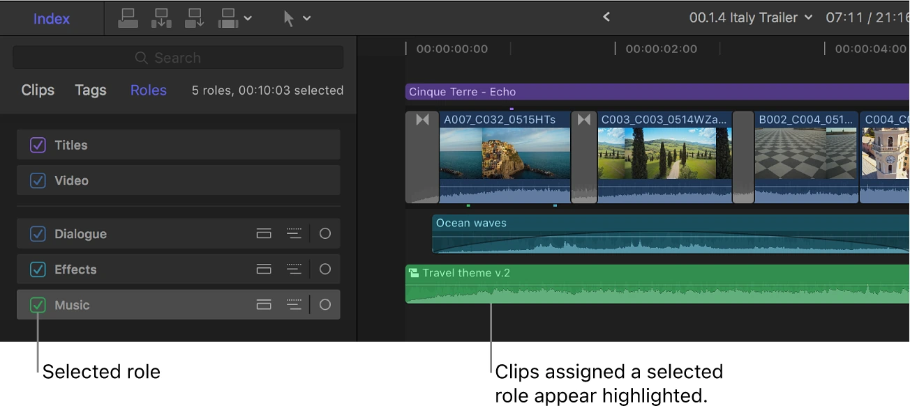
Timeline Index에서 Music Role을 선택한 화면. 음악·효과음·현장음을 의미별로 구분한다.Apple 공식 Final Cut Pro 사용자 가이드의 실제 화면 · © Apple · 원문 ↗ 실제 작업 순서 Audio Inspector에서 채널 구성을 듣고 확인한다. Dialogue·Music·Effects와 필요한 Subrole을 지정한다. Timeline Index의 Roles 보기에서 역할별로 찾고 들어본다. 역할별 출력을 만들면 다시 불러 합쳐 전체 믹스와 비교한다. 장면으로 이해하기 Dialogue/Interview, Dialogue/VO, Effects/Underwater처럼 나누면 수중 효과만 찾아 조절할 수 있다. 최종 믹스를 계속 검수하며 레벨을 결정한다.
막히거나 과해질 때 Role은 자동 음량 표준화나 별도 믹서 버스와 동일하지 않다. 꺼둔 컴포넌트가 필요한 소리였는지 검수한다.
직접 해볼 실습 · 완료 기준 대사·음악·효과음 3개를 역할로 나누고 각 역할을 단독으로 들어 누락을 찾는다.
기능의 메뉴·조건은 원문 안내 에서 설치 버전으로 확인하세요. 장면 예시·수치·실습·작업 방식의 선택은 이 교재의 제안입니다.
PART 3 · 26 / 83
레벨·페이드·노이즈·대사 명료도 피크는 순간 최대치, 체감 음량은 시간과 주파수 분포까지 포함한다. 작은 대사를 크게만 올리면 소음도 커진다.
왜 이 방법을 쓰는가 먼저 대사 이해도를 만들고 음악과 현장음을 받쳐야 한다. 특정 플랫폼의 납품 규격이 있다면 그 규격의 음량·피크 기준을 사용한다.
직접 만든 원리 설명용 도식입니다. 실제 앱 화면이나 효과 출력의 복제본이 아닙니다. 실제 작업 순서 대사 소스를 정리하고 불필요한 컴포넌트를 끈다. 클립별 레벨 편차를 줄인다. 필요한 구간에 작은 페이드와 음악 볼륨 키프레임을 넣는다. Voice Isolation·노이즈 제거는 적게 적용해 원본과 비교한다. 헤드폰·스피커·작은 볼륨에서 다시 듣는다. 장면으로 이해하기 대사가 나올 때 음악을 몇 dB 낮추고 말이 끝난 뒤 천천히 복귀시킨다. 매 단어마다 볼륨이 출렁이면 과도한 자동화다.
막히거나 과해질 때 녹음에서 이미 찢어진 클리핑은 최종 음량을 낮춰도 원래 파형이 복원되지 않는다. 노이즈 제거를 강하게 하면 목소리에 금속성·물소리 같은 결함이 생긴다.
직접 해볼 실습 · 완료 기준 같은 대사를 원본·강한 제거·약한 제거로 듣고 명료도와 자연스러움을 따로 평가한다.
기능의 메뉴·조건은 원문 안내 에서 설치 버전으로 확인하세요. 장면 예시·수치·실습·작업 방식의 선택은 이 교재의 제안입니다.
PART 3 · 27 / 83
물속처럼 먹먹해졌다 선명해지는 소리 먹먹함은 주로 고역을 줄이는 low-pass 또는 EQ와 레벨·공간감 변화의 조합이다. 단순히 볼륨만 줄이면 작아질 뿐 물속 인상은 약하다.
왜 이 방법을 쓰는가 주파수 컷오프가 낮아질수록 밝은 소리가 사라진다. 아래 수치는 출발점이며 원곡·스피커에 따라 귀로 조절한다.
직접 만든 원리 설명용 도식입니다. 실제 앱 화면이나 효과 출력의 복제본이 아닙니다. 사진으로 보는 배치와 연결
수중 · 고역 감소 구간
수면 위 · 고역 복귀 구간 수중과 수면 위 화면에 고역 필터 복귀를 연결하는 장면. 생성한 연습용 사진이며 특정 크리에이터의 원본 장면·FCP 화면이 아닙니다.
실제 작업 순서 원본 음악을 복제 프로젝트에서 시작·중간·복귀 구간으로 나눈다. 중간 구간에 low-pass나 적절한 EQ를 넣고 약 1~3kHz 부근부터 들어본다. 지원되는 파라미터는 효과 키프레임으로 전환을 부드럽게 만든다. 자동화가 어려우면 필터 버전과 원본 버전의 볼륨을 교차시킨다. 중복 구간의 음량·클릭·위상 변화를 점검한다. 장면으로 이해하기 수중 진입 0.3초 전부터 고역을 줄이고 수중에서 유지한다. 지상 컷에서 바로 원복하는 버전과 0.4초에 걸쳐 복귀하는 버전을 비교한다.
막히거나 과해질 때 두 복제 음악을 같은 볼륨으로 겹치면 커지거나 comb filtering이 생길 수 있다. 대사 Role을 무심코 함께 먹먹하게 만들지 않는다.
직접 해볼 실습 · 완료 기준 고역 변화와 볼륨 변화만 있는 버전을 번갈아 듣고 차이를 설명한다.
기능의 메뉴·조건은 원문 안내 에서 설치 버전으로 확인하세요. 장면 예시·수치·실습·작업 방식의 선택은 이 교재의 제안입니다.
PART 3 · 28 / 83
현장음·앰비언스·전환 효과음 앰비언스는 공간의 바닥, 현장 동작음은 행동의 설득력, 전환 효과음은 편집 악센트다. 각 소리에 역할이 있으면 음악 한 곡에만 기대지 않는다.
왜 이 방법을 쓰는가 장면마다 효과음을 많이 넣는 것보다 공간의 연속성과 중요한 동작의 순간을 설계하는 편이 자연스럽다. 무빙마다 whoosh를 넣으면 오히려 움직임이 과장된다.
직접 만든 원리 설명용 도식입니다. 실제 앱 화면이나 효과 출력의 복제본이 아닙니다. 실제 작업 순서 기본 앰비언스를 길게 깔고 장면 사이를 자연스럽게 연결한다. 컵·발·문·물 동작에 필요한 소리를 작은 레벨로 더한다. 전환 효과음은 가장 큰 구조 변화 몇 곳에 제한한다. 음악을 끄고 공간이 읽히는지 듣는다. 장면으로 이해하기 드론 해변 와이드에 바람·파도, 수중 진입에 짧은 충격과 고역 감소, 카페 클로즈업에 잔소리를 쓴다. 멀리 보이는 인물에 너무 가까운 소리를 넣으면 거리감이 무너진다.
막히거나 과해질 때 사운드 라이브러리의 소리가 크다는 이유로 그대로 쓰지 않는다. 거리·잔향·톤이 영상 공간과 맞아야 한다.
직접 해볼 실습 · 완료 기준 10초 해변 장면을 음악 없이 앰비언스와 2개 동작음으로 설계한다.
기능의 메뉴·조건은 원문 안내 에서 설치 버전으로 확인하세요. 장면 예시·수치·실습·작업 방식의 선택은 이 교재의 제안입니다.
PART 3 · 29 / 83
슬로모션·Automatic Speed·속도 램프 원본 FPS ÷ 타임라인 FPS 관계가 모든 촬영 프레임을 한 번씩 쓰는 속도를 정한다. 60fps를 24fps에 conform하면 40%, 120fps는 20%가 된다.
왜 이 방법을 쓰는가 촬영 FPS, 파일 재생 FPS, 이미 카메라에서 느리게 기록된 파일의 속도를 구분해야 한다. 이미 24fps 슬로 파일을 또 40%로 줄이면 다른 결과가 된다.
직접 만든 원리 설명용 도식입니다. 실제 앱 화면이나 효과 출력의 복제본이 아닙니다. 실제 Final Cut Pro 화면으로 확인 Apple 공식 가이드에서 가져온 실제 화면입니다. 이미지를 누르면 크게 볼 수 있습니다. 앱 버전·언어에 따라 표시가 다를 수 있습니다.
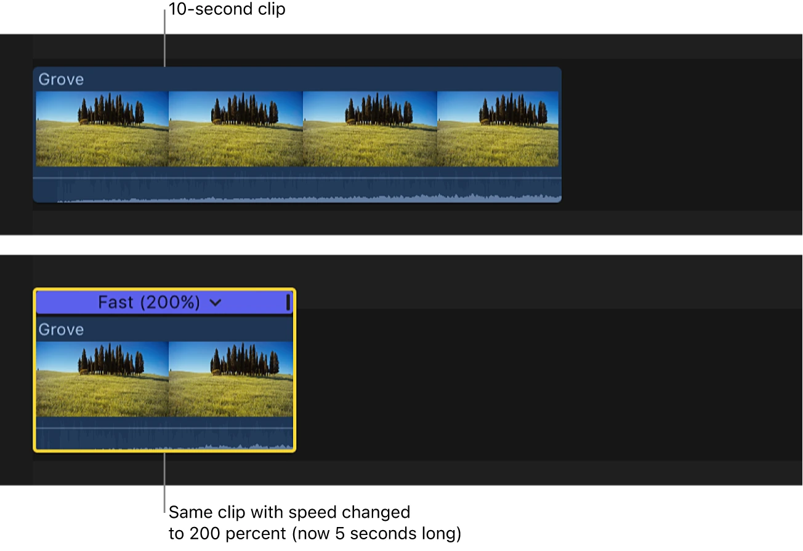
클립 위 초록색 200% 속도 바. 빠르게 만든 클립의 재생 길이가 줄어든다.Apple 공식 Final Cut Pro 사용자 가이드의 실제 화면 · © Apple · 원문 ↗ 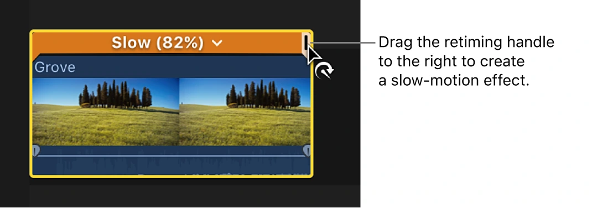
느려진 클립 위 주황색 속도 바. 속도 변경과 원본 프레임 보간을 구분한다.Apple 공식 Final Cut Pro 사용자 가이드의 실제 화면 · © Apple · 원문 ↗ 실제 작업 순서 클립의 실제 파일 FPS와 촬영 방식부터 확인한다. Automatic Speed와 Custom Speed를 비교한다. Retime Editor에서 구간별 속도와 Speed Transition을 조절한다. Optical Flow·Smooth Slo-Mo 등 지원되는 보간을 비교한다. 렌더 후 손발·파도·부유물·프레임 경계를 정상 속도로 검수한다. 장면으로 이해하기 드론 이동은 빠르게, 인물 동작의 정점은 느리게, 결과 장면은 정상 속도로 연결한다. 램프는 동작이 변하는 이유와 연결되어야 한다.
막히거나 과해질 때 Optical Flow가 없는 프레임을 완벽히 복구하지 않는다. 물결·가림·빠른 팬에서 형태가 찌그러질 수 있고, 반복 램프는 왕복 XML에서도 고위험 요소다.
직접 해볼 실습 · 완료 기준 같은 파도 컷을 보간 없음·Optical Flow로 비교하고 왕복 전달 방식까지 기록한다.
기능의 메뉴·조건은 원문 안내 에서 설치 버전으로 확인하세요. 장면 예시·수치·실습·작업 방식의 선택은 이 교재의 제안입니다.
PART 4 · 30 / 83
Transform·Crop·Distort·Spatial Conform Transform은 위치·크기·회전, Crop은 프레임의 잘라내기, Distort는 모서리 변형, Spatial Conform은 서로 다른 화면 크기를 프로젝트에 맞추는 기본 해석이다.
왜 이 방법을 쓰는가 Fit은 전체 이미지를 보여주며 빈 공간이 생길 수 있고, Fill은 화면을 채우며 일부가 잘릴 수 있다. 서로 다른 비율의 카메라를 섞을 때 확대 수치만 복사하면 구도가 달라진다.
직접 만든 원리 설명용 도식입니다. 실제 앱 화면이나 효과 출력의 복제본이 아닙니다. 실제 작업 순서 클립을 선택해 Video Inspector에서 Spatial Conform을 확인한다. Transform으로 수평·주 피사체 위치를 조정한다. Crop으로 필요한 영역을 선택하고 결과 크기를 비교한다. Distort는 원근 보정 또는 의도된 그래픽 표현에 제한해 쓴다. 장면으로 이해하기 16:9 와이드를 9:16으로 만들면 가로 구도의 대부분이 사라진다. 인물 중심만 살리는 버전과 와이드를 작게 보이는 버전은 전달하는 정보가 다르다.
막히거나 과해질 때 크롭과 확대를 여러 단계에서 반복하면 해상도를 낭비한다. 다빈치 왕복에서 같은 크롭이 두 번 적용되지 않도록 담당 앱을 정한다.
직접 해볼 실습 · 완료 기준 같은 컷을 Fit·Fill·직접 리프레임 세 가지로 비교한다.
기능의 메뉴·조건은 원문 안내 에서 설치 버전으로 확인하세요. 장면 예시·수치·실습·작업 방식의 선택은 이 교재의 제안입니다.
PART 4 · 31 / 83
세로 영상·Smart Conform·안전한 화면 영역 가로 영상의 세로판은 화면 비율만 바꾸는 작업이 아니다. 주 피사체, 자막 위치, 앱 UI가 가리는 영역과 샷 구성을 다시 판단한다.
왜 이 방법을 쓰는가 Smart Conform은 피사체를 따라가는 출발점이다. 드론 전경이나 둘이 떨어져 있는 장면처럼 하나의 중심이 없는 컷은 직접 구도를 결정해야 한다.
직접 만든 원리 설명용 도식입니다. 실제 앱 화면이나 효과 출력의 복제본이 아닙니다. 실제 작업 순서 원본 Project를 복제해 세로 비율로 만든다. 지원되는 Smart Conform을 적용하고 각 컷을 확인한다. 인물 이동 컷에는 Transform 키프레임을 보완한다. 타이틀과 주요 정보가 플랫폼 화면 UI에 가리지 않는지 실제 기기로 본다. 장면으로 이해하기 가로 화면에서 바다와 인물을 함께 보여주는 컷은 세로판에서 인물 클로즈업처럼 변한다. 필요하면 바다 디테일을 별도 컷으로 보완한다.
막히거나 과해질 때 자막 안전 여백은 플랫폼마다 다르다. 고정된 픽셀 숫자를 모든 앱의 공식 규격처럼 적용하지 않는다.
직접 해볼 실습 · 완료 기준 같은 15초를 가로·세로로 만들고 정보가 사라진 컷을 찾아 교체한다.
기능의 메뉴·조건은 원문 안내 에서 설치 버전으로 확인하세요. 장면 예시·수치·실습·작업 방식의 선택은 이 교재의 제안입니다.
PART 4 · 32 / 83
안정화·롤링셔터와 무빙의 목적 Stabilization은 흔들림을 줄이기 위해 화면을 움직이고 확대한다. Rolling Shutter 보정은 센서 읽기 차이로 생긴 기울어짐을 다루며 다른 문제다.
왜 이 방법을 쓰는가 짐벌 컷이 모두 안정화 대상은 아니다. 의도한 팬이나 전경 통과에서 자동 보정이 카메라 움직임을 억누르거나 가장자리를 늘릴 수 있다.
직접 만든 원리 설명용 도식입니다. 실제 앱 화면이나 효과 출력의 복제본이 아닙니다. 실제 작업 순서 한 컷에 안정화를 켜고 분석 완료를 기다린다. 보정 전후의 크롭·수평선·모서리를 비교한다. 강도를 낮추거나 다른 지원 방식을 시험한다. 롤링셔터 문제는 별도 항목으로 확인한다. 왕복에서는 FCP에서 마무리하거나 보정이 필요한 컷만 구워 전달한다. 장면으로 이해하기 RS3 Mini로 걸으며 촬영한 컷의 발걸음 진동은 줄일 수 있지만 모션 블러가 이미 번진 프레임을 또렷하게 되살리는 것은 아니다.
막히거나 과해질 때 강한 보정이 반드시 더 좋지는 않다. 수중 부유물·물결·나뭇잎에서 화면이 젤리처럼 변하면 보정 방식이나 컷 선택을 바꾼다.
직접 해볼 실습 · 완료 기준 앞뒤 전경이 있는 컷에서 보정 0·약·강 버전의 크롭과 자연스러움을 비교한다.
기능의 메뉴·조건은 원문 안내 에서 설치 버전으로 확인하세요. 장면 예시·수치·실습·작업 방식의 선택은 이 교재의 제안입니다.
PART 4 · 33 / 83
키프레임·보간·애니메이션의 타이밍 키프레임은 특정 시간의 값이고 보간은 그 사이 값이 어떻게 변하는지다. 위치만 맞아도 가속·감속이 부자연스러우면 움직임은 기계적으로 보인다.
왜 이 방법을 쓰는가 두 키프레임의 간격이 짧으면 빠르고 길면 느리다. Linear는 일정한 변화, 부드러운 보간은 출발·도착 느낌을 바꾼다. 모든 파라미터가 같은 보간 옵션을 제공하지는 않는다.
직접 만든 원리 설명용 도식입니다. 실제 앱 화면이나 효과 출력의 복제본이 아닙니다. 실제 Final Cut Pro 화면으로 확인 Apple 공식 가이드에서 가져온 실제 화면입니다. 이미지를 누르면 크게 볼 수 있습니다. 앱 버전·언어에 따라 표시가 다를 수 있습니다.
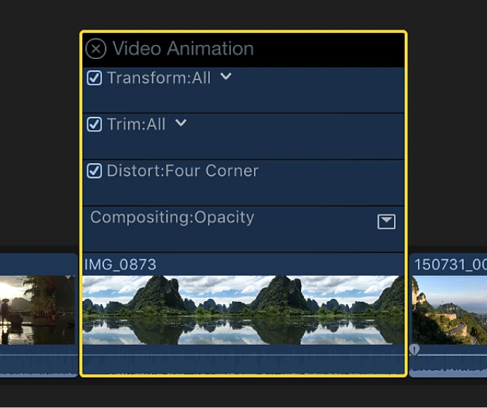
실제 Video Animation Editor. 시간에 따른 효과 변화 위치를 확인한다.Apple 공식 Final Cut Pro 사용자 가이드의 실제 화면 · © Apple · 원문 ↗ 실제 작업 순서 Inspector에서 움직일 파라미터의 시작 키프레임을 넣는다. 플레이헤드를 옮기고 끝 값을 바꾼다. Video Animation 또는 지원되는 편집기에서 시간과 보간을 조절한다. 타이틀·화면·소리의 변화가 같은 의도에 맞는지 확인한다. 장면으로 이해하기 0.6초 만에 제목이 튀어나오는 버전과 1.2초에 걸쳐 천천히 들어오는 버전은 다른 분위기다. 비트에 도착점을 맞추고 출발을 앞당길 수도 있다.
막히거나 과해질 때 잘못된 시간에 남은 키프레임 하나가 갑작스러운 점프를 만든다. 효과를 복사할 때 상대 시간과 클립 길이도 확인한다.
직접 해볼 실습 · 완료 기준 같은 이동을 Linear·부드러운 출발·부드러운 도착으로 비교하고 의도를 설명한다.
기능의 메뉴·조건은 원문 안내 에서 설치 버전으로 확인하세요. 장면 예시·수치·실습·작업 방식의 선택은 이 교재의 제안입니다.
PART 4 · 34 / 83
마스크의 두 목적: 합성 분리와 효과 제한 마스크는 보이는 영역 또는 효과가 적용되는 영역을 정한다. 피사체를 잘라 배경을 지우는 마스크와 피부 색만 바꾸는 효과 마스크는 결과가 다르다.
왜 이 방법을 쓰는가 Shape는 위치·형태, Color Mask는 색, Magnetic Mask는 지정한 피사체, Auto Mask는 인식된 의미 영역을 활용한다. 공간과 색 조건을 조합하면 더 정확해질 수 있다.
직접 만든 원리 설명용 도식입니다. 실제 앱 화면이나 효과 출력의 복제본이 아닙니다. 실제 Final Cut Pro 화면으로 확인 Apple 공식 가이드에서 가져온 실제 화면입니다. 이미지를 누르면 크게 볼 수 있습니다. 앱 버전·언어에 따라 표시가 다를 수 있습니다.
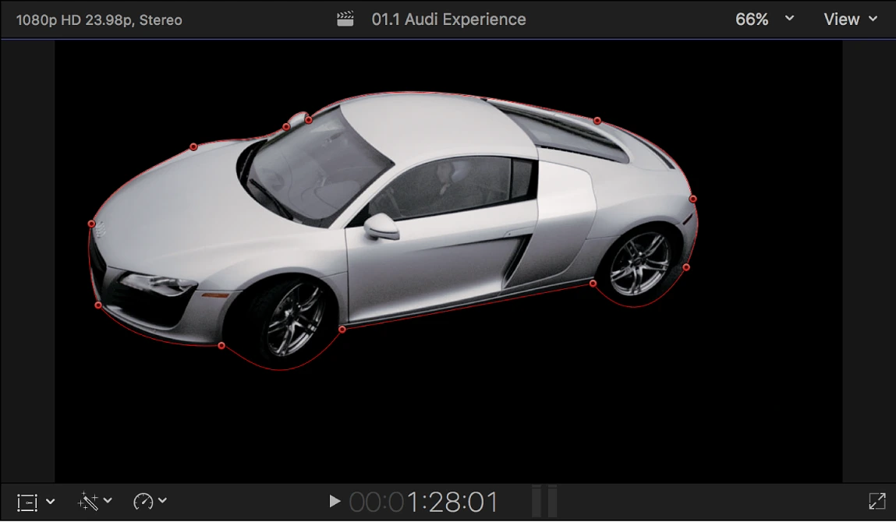
닫힌 마스크 안쪽만 남긴 화면. 뒤에 다른 클립을 두면 그 부분이 드러나는 합성이 된다.Apple 공식 Final Cut Pro 사용자 가이드의 실제 화면 · © Apple · 원문 ↗ 실제 작업 순서 먼저 배경을 제거할지 효과만 제한할지 결정한다. 간단한 영역은 Shape·Draw Mask로 시작한다. 색 선택에는 Color Mask와 공간 제한을 함께 검토한다. 마스크 표시로 흰 영역·검은 영역·중간 경계를 확인한다. Feather를 조절하고 움직이는 전체 컷을 재생한다. 장면으로 이해하기 하늘만 어둡게 할 때 합성 분리 효과를 넣으면 하늘이 투명해질 수 있다. 필요한 것은 색보정 효과에 연결된 하늘 마스크다.
막히거나 과해질 때 Feather를 크게 주면 모든 경계가 자연스러워지는 것이 아니다. 밝은 halo나 배경 누출이 보이면 영역·보정량부터 줄인다.
직접 해볼 실습 · 완료 기준 한 인물 장면에서 배경 제거와 얼굴 밝기 제한을 각각 만들어 결과 차이를 설명한다.
기능의 메뉴·조건은 원문 안내 에서 설치 버전으로 확인하세요. 장면 예시·수치·실습·작업 방식의 선택은 이 교재의 제안입니다.
PART 4 · 35 / 83
Magnetic Mask: 지정한 피사체를 따라 분리 Magnetic Mask는 사람·물체·형태를 선택하고 시간에 따른 분리를 분석한다. 선택 프레임이 좋아도 전체 분석이 완벽하다고 보장하지 않는다.
왜 이 방법을 쓰는가 머리카락·손·가림·모션 블러가 주요 실패 지점이다. 인물과 배경이 가장 잘 분리되는 프레임을 출발점으로 잡는다.
직접 만든 원리 설명용 도식입니다. 실제 앱 화면이나 효과 출력의 복제본이 아닙니다. 실제 Final Cut Pro 화면으로 확인 Apple 공식 가이드에서 가져온 실제 화면입니다. 이미지를 누르면 크게 볼 수 있습니다. 앱 버전·언어에 따라 표시가 다를 수 있습니다.
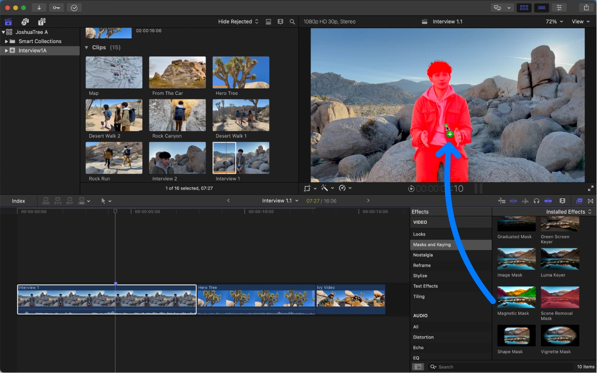
Effects Browser에서 Magnetic Mask를 클립으로 가져오는 화면. 피사체 분리의 출발점이다.Apple 공식 Final Cut Pro 사용자 가이드의 실제 화면 · © Apple · 원문 ↗ 실제 작업 순서 효과 브라우저의 Magnetic Mask를 클립 또는 Viewer의 피사체에 넣는다. Add·Remove 선택으로 필요한 영역을 정리한다. 앞뒤 또는 전체 Analyze를 실행한다. 중간 가림 지점에서 경계를 보완하고 다시 확인한다. 배경 교체용인지 효과 제한용인지 해당 적용 위치를 확인한다. 장면으로 이해하기 인물 뒤에 제목을 놓으려면 원본 배경, 제목, 마스크로 분리한 인물을 층으로 배치한다. 마스크가 흔들리면 제목보다 얼굴 경계에 먼저 시선이 간다.
막히거나 과해질 때 키프레임·자동 추적을 켠 사실이 아니라 경계의 자연스러움이 완성 기준이다. 흐린 피사체에 지나치게 선명한 경계를 만들지 않는다.
직접 해볼 실습 · 완료 기준 인물이 손으로 얼굴을 가리는 3초를 분석하고 얼굴·손 경계를 프레임별로 본다.
기능의 메뉴·조건은 원문 안내 에서 설치 버전으로 확인하세요. 장면 예시·수치·실습·작업 방식의 선택은 이 교재의 제안입니다.
PART 4 · 36 / 83
Auto Mask·Object Tracker·Scene Removal의 차이 Auto Mask는 얼굴·피부·의상·하늘 등 인식된 영역을 효과 대상으로 고른다. Object Tracker는 효과·타이틀 등의 위치가 물체 움직임을 따라가게 한다. Scene Removal은 다른 배경 분리 방법이다.
왜 이 방법을 쓰는가 사람을 따라가는 위치 사각형과 실제 사람의 윤곽 마스크는 같지 않다. 어떤 정보가 필요한지 먼저 고르면 분석 부담과 실패도 줄어든다.
직접 만든 원리 설명용 도식입니다. 실제 앱 화면이나 효과 출력의 복제본이 아닙니다. 실제 Final Cut Pro 화면으로 확인 Apple 공식 가이드에서 가져온 실제 화면입니다. 이미지를 누르면 크게 볼 수 있습니다. 앱 버전·언어에 따라 표시가 다를 수 있습니다.
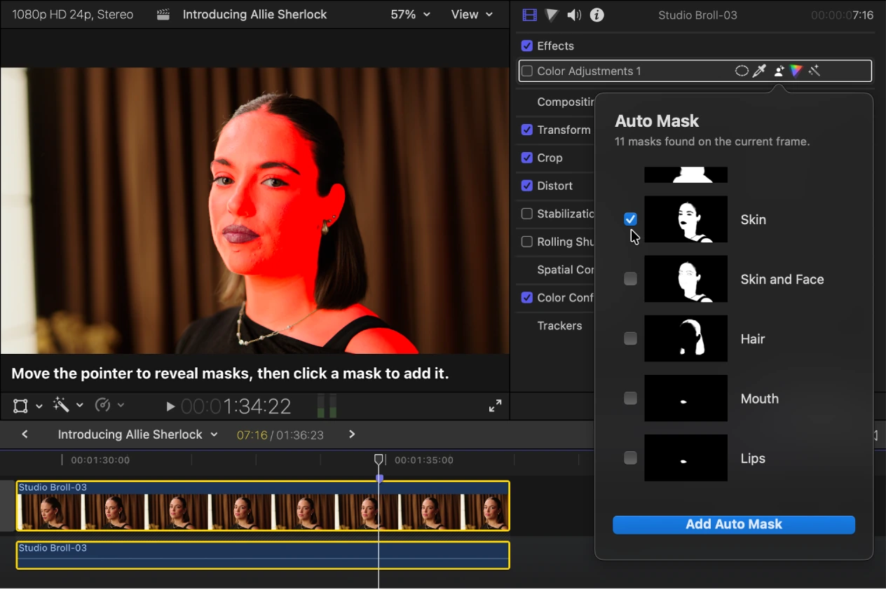
Viewer의 선택 마스크와 Video Inspector. 마스크가 화면 합성을 위한 것인지 효과 적용 범위를 제한하는 것인지 확인한다.Apple 공식 Final Cut Pro 사용자 가이드의 실제 화면 · © Apple · 원문 ↗ 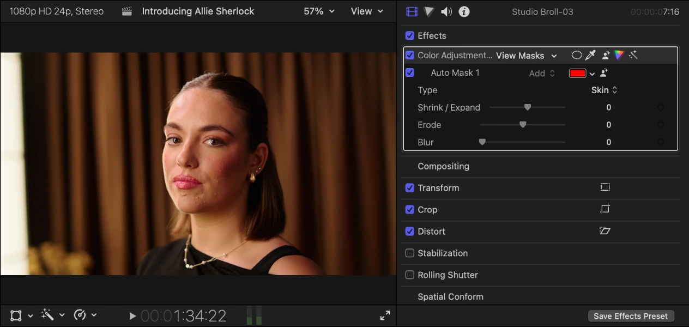
마스크로 제한된 색보정 화면. 합성용 인물 분리와 같은 작업으로 취급하지 않는다.Apple 공식 Final Cut Pro 사용자 가이드의 실제 화면 · © Apple · 원문 ↗ 실제 작업 순서 Auto Mask는 효과 이름 옆 Add Intelligent Mask에서 선택한다. 인식된 영역 썸네일을 고르고 Add Auto Mask로 확정한다. 경계와 보정 누출을 재생하며 확인한다. Object Tracker는 타이틀·이미지 추적에 쓰고, 실패 구간은 수동 보완한다. Scene Removal은 촬영 조건에 맞는지 해당 안내를 확인한다. 장면으로 이해하기 인물 피부톤은 Auto Mask 후보를, 손에 붙는 상품 이름은 Object Tracker를, 특이한 사물 윤곽은 Magnetic Mask를 시험한다.
막히거나 과해질 때 최신 AI 기능이라고 세 도구가 서로 완전히 대체되지는 않는다. 대상·언어·촬영 조건·버전 조건을 확인한다.
직접 해볼 실습 · 완료 기준 같은 움직이는 인물에서 피부 효과 제한과 따라가는 타이틀을 각각 만들어 본다.
기능의 메뉴·조건은 원문 안내 에서 설치 버전으로 확인하세요. 장면 예시·수치·실습·작업 방식의 선택은 이 교재의 제안입니다.
PART 4 · 37 / 83
인물의 몇 초 전 잔상과 움직이는 배경 움직이는 원본 위에 과거 시점의 인물만 분리해 올리는 합성이다. 전체 Freeze Frame을 올리면 배경까지 멈추므로 원하는 결과와 다르다.
왜 이 방법을 쓰는가 정지 인물의 과거 위치와 현재 카메라 시점이 맞아야 한다. 카메라가 이동하면 원근·크기·가림·빛 변화 때문에 단순 2D 위치 조정으로는 부족할 수 있다.
직접 만든 원리 설명용 도식입니다. 실제 앱 화면이나 효과 출력의 복제본이 아닙니다. 사진으로 보는 배치와 연결
t₀ · 이전 인물 위치
t₁ · 다음 인물 위치 위: t₀ 프레임에서 분리한 인물 Freeze Frame · 아래: t₁의 움직이는 원본. 인물만 남기는 마스크와 불투명도 키프레임을 사용합니다. 사진 두 장은 위치 관계를 설명하며 실제 앱 출력이 아닙니다.
이전 위치의 인물을 남기고 다음 위치의 인물을 보여주는 합성 설계. 생성한 연습용 사진이며 특정 크리에이터의 원본 장면·FCP 화면이 아닙니다.
실제 작업 순서 움직이는 원본을 아래에 둔다. 몇 초 전 프레임에서 Freeze Frame을 만들고 위에 연결한다. 정지 레이어의 인물만 Magnetic 또는 Draw Mask로 남긴다. Opacity와 지속 시간·등장 페이드를 조절한다. 카메라 움직임과 가리는 물체를 검수한다. 어려운 3D 이동은 Motion·Fusion에서 별도 합성을 검토한다. 장면으로 이해하기 고정 카메라로 걷는 인물의 잔상을 먼저 만든다. 그 다음 짧은 팬에서 위치 보정만 가능한지 비교한다. 서로 다른 시점에서 찍힌 인물은 바닥 접촉과 그림자로 차이가 드러난다.
막히거나 과해질 때 마스크 추적은 카메라의 3D 시점 변화 해결과 다르다. 원본 배경을 유지하는 단순 잔상과 인물 제거·빈 배경 복원까지 필요한 합성을 구분한다.
직접 해볼 실습 · 완료 기준 고정 3초 컷에서 잔상 1개를 만들고 발·머리카락·그림자를 평가한다.
기능의 메뉴·조건은 원문 안내 에서 설치 버전으로 확인하세요. 장면 예시·수치·실습·작업 방식의 선택은 이 교재의 제안입니다.
PART 4 · 38 / 83
Adjustment Clip·효과 순서·구간별 룩 기본 Adjustment Clip은 11.1부터 여러 아래쪽 컷에 효과·색보정을 적용하는 방법이다. 어떤 영상 층이 영향을 받는지는 실제 레이어 위치와 시간 범위를 확인한다.
왜 이 방법을 쓰는가 전체 룩에는 유용하지만 클립별 노출·입력 변환 문제를 덮는 용도로 쓰면 컷 차이가 남는다. 피부·배경 마스크는 각 장면의 위치가 다르므로 전역 레이어 재사용에 신중해야 한다.
직접 만든 원리 설명용 도식입니다. 실제 앱 화면이나 효과 출력의 복제본이 아닙니다. 실제 작업 순서 Adjustment Clip을 필요한 시간 범위 위에 둔다. 전체 공통 효과와 클립별 교정을 나눈다. 같은 구간의 타이틀이 영향을 받는지 확인한다. 효과 순서를 바꾸며 노출·블러·그레인 결과를 비교한다. Resolve가 색을 담당하면 임시 조정과 최종 조정을 구분해 기록한다. 장면으로 이해하기 필름 분위기 공통 룩은 위에서 적용하고 카페의 과노출과 수중의 색 편향은 클립별로 고친다. 배경·피부·전체 노출을 분리하던 습관도 이 구분으로 정리할 수 있다.
막히거나 과해질 때 조정 레이어는 Resolve의 병렬 노드와 같은 처리 구조가 아니다. 다빈치에서 완성한 룩 위에 같은 LUT를 다시 적용하면 변환·룩이 중복된다.
직접 해볼 실습 · 완료 기준 같은 3컷에 공통 효과를 넣고 한 컷만 다른 노출일 때 어느 위치에서 수정할지 판단한다.
기능의 메뉴·조건은 원문 안내 에서 설치 버전으로 확인하세요. 장면 예시·수치·실습·작업 방식의 선택은 이 교재의 제안입니다.
PART 4 · 39 / 83
Paste Attributes·프리셋·Motion 템플릿 속성 붙여넣기는 선택한 속성의 재사용, 효과 프리셋은 설정의 재사용, Motion 템플릿은 반복 디자인의 재사용에 가깝다. 목적에 맞는 단위로 저장한다.
왜 이 방법을 쓰는가 Transform만 복사하려다 색·Crop·오디오까지 덮으면 다른 컷을 망친다. 재사용 가능 설정과 샷마다 다시 판단할 설정을 구분한다.
직접 만든 원리 설명용 도식입니다. 실제 앱 화면이나 효과 출력의 복제본이 아닙니다. 실제 작업 순서 원본 클립을 Copy한 뒤 Edit > Paste Attributes를 연다. 필요한 항목만 선택하고 목적지 결과를 확인한다. 반복하는 효과 조합은 지원되는 Save Effects Preset 기능으로 보관한다. Motion 템플릿은 설치 위치·폰트·플러그인 의존성을 기록한다. 장면으로 이해하기 같은 자막 인·아웃 애니메이션은 템플릿으로, 같은 카메라의 임시 변환은 설정으로, 다른 얼굴의 마스크 위치는 개별 작업으로 둔다.
막히거나 과해질 때 마스크 분석·키프레임·리타임이 모든 목적지에서 적절하게 재사용된다고 가정하지 않는다. 긴 컷에서 만든 타이밍은 짧은 컷에서 다시 검수한다.
직접 해볼 실습 · 완료 기준 3개 화면 비율이 다른 컷에 필요한 속성만 붙여 넣고 의도하지 않은 변화를 찾는다.
기능의 메뉴·조건은 원문 안내 에서 설치 버전으로 확인하세요. 장면 예시·수치·실습·작업 방식의 선택은 이 교재의 제안입니다.
PART 5 · 40 / 83
전환의 문법: 무엇을 이어주고 무엇을 끊는가 화면 전환은 공간·시간·감정·정보 중 무엇이 바뀌는지 관객에게 알려주는 편집이다. 효과 목록을 열기 전에 두 장면의 관계를 정한다.
왜 이 방법을 쓰는가 같은 방향의 움직임은 연속성을, 갑작스러운 정지는 대비를 만든다. 눈이 이동할 목적지를 준비하면 복잡한 효과 없이도 연결이 매끄럽다. 시네마틱이라는 말은 한 가지 전환 프리셋을 뜻하지 않는다.
직접 만든 원리 설명용 도식입니다. 실제 앱 화면이나 효과 출력의 복제본이 아닙니다. 실제 작업 순서 A와 B의 관계를 적는다: 같은 행동, 장소 이동, 시간 경과, 분위기 반전 중 하나. A 마지막과 B 첫 프레임의 시선 중심·움직임 방향·크기·밝기를 비교한다. 하드 컷으로 먼저 연결하고, 부족한 의미가 무엇인지 확인한다. 필요한 경우 가림·매치·소리 브리지·디졸브 중 관계에 맞는 방법 하나를 선택한다. 전환 직전·직후 정상 속도 컷을 남겨 관객이 장소와 인물을 이해하게 한다. 장면으로 이해하기 부산 시장의 국자 동작에서 해변 파도 동작으로 넘긴다. 둘 다 오른쪽으로 흐르게 만들면 장소는 바뀌지만 움직임의 에너지는 이어진다.
막히거나 과해질 때 모든 컷에 줌·회전·whoosh를 넣으면 중요한 전환과 평범한 연결이 같은 세기로 느껴진다. 전환 없는 컷을 기준으로 비교한다.
직접 해볼 실습 · 완료 기준 같은 6컷을 하드 컷만으로 조립한 뒤 두 곳만 전환을 넣는다. 장소가 바뀌는 이유와 시선 이동을 설명할 수 있으면 완료.
기능의 메뉴·조건은 원문 안내 에서 설치 버전으로 확인하세요. 장면 예시·수치·실습·작업 방식의 선택은 이 교재의 제안입니다.
PART 5 · 41 / 83
기본 트랜지션과 여유 프레임 디졸브·페이드 등의 전환은 두 클립의 겹칠 구간이 필요하다. 타임라인에 보이는 길이와 원본에 남아 있는 길이를 구분한다.
왜 이 방법을 쓰는가 사용한 원본의 앞뒤가 끝까지 잘려 있으면 겹침에 필요한 화면이 부족하다. 전환을 늘리는 순간 총길이가 바뀌거나 사용 구간이 예상과 달라질 수 있다.
직접 만든 원리 설명용 도식입니다. 실제 앱 화면이나 효과 출력의 복제본이 아닙니다. 실제 작업 순서 두 클립의 경계에서 원본 앞뒤 여유를 확인한다. Transitions Browser에서 효과를 경계에 적용하거나 Command-T로 기본 전환을 적용한다. 기본 전환은 사용자 설정에 따라 다를 수 있다. 전환 길이를 짧게 시작하고 타임라인 총길이·양쪽 컷 길이를 전후 비교한다. 경계 전체를 재생하며 중간의 이중 윤곽과 원치 않는 프레임을 확인한다. Resolve 반환 전환은 handles와 함께 시험하고 최종 FCP 재적용 여부를 기록한다. 장면으로 이해하기 24fps에서 총 12프레임 전환을 양쪽 대칭으로 쓰는 예라면 각쪽 약 6프레임이 필요하다. 이는 개념 예시이며 실제 배치·전환·리타임에 따라 필요한 여유는 달라진다.
막히거나 과해질 때 전환 길이를 초 단위로만 기록하면 FPS 변경에서 뜻이 달라진다. 원본 여유와 왕복 handles를 같은 것처럼 보지 않는다.
직접 해볼 실습 · 완료 기준 복제 프로젝트에서 원본 여유가 있는 경계와 없는 경계에 같은 전환을 적용해 총길이·내용 변화를 비교한다.
기능의 메뉴·조건은 원문 안내 에서 설치 버전으로 확인하세요. 장면 예시·수치·실습·작업 방식의 선택은 이 교재의 제안입니다.
PART 5 · 42 / 83
전경 마스크 와이프: 기둥 뒤에서 다음 장소로 카메라 가까운 기둥·벽·사람 등이 A 장면을 쓸고 지나갈 때 그 경계를 따라 B 장면이 드러나게 한다. 촬영 중 만들어진 가림을 편집의 경계로 사용한다.
왜 이 방법을 쓰는가 가림막의 실제 움직임과 경계가 같으면 관객은 효과보다 카메라 이동을 먼저 느낀다. 좋은 전환은 A 끝과 B 시작의 방향·속도·배경 배치가 이미 연결되도록 촬영한 결과다.
직접 만든 원리 설명용 도식입니다. 실제 앱 화면이나 효과 출력의 복제본이 아닙니다. 실제 Final Cut Pro 화면으로 확인 Apple 공식 가이드에서 가져온 실제 화면입니다. 이미지를 누르면 크게 볼 수 있습니다. 앱 버전·언어에 따라 표시가 다를 수 있습니다.
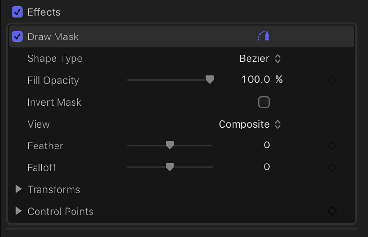
Draw Mask Inspector의 Control Points·Feather·Falloff. 경계 위치를 먼저 맞춘 뒤 가장자리를 조절한다.Apple 공식 Final Cut Pro 사용자 가이드의 실제 화면 · © Apple · 원문 ↗ 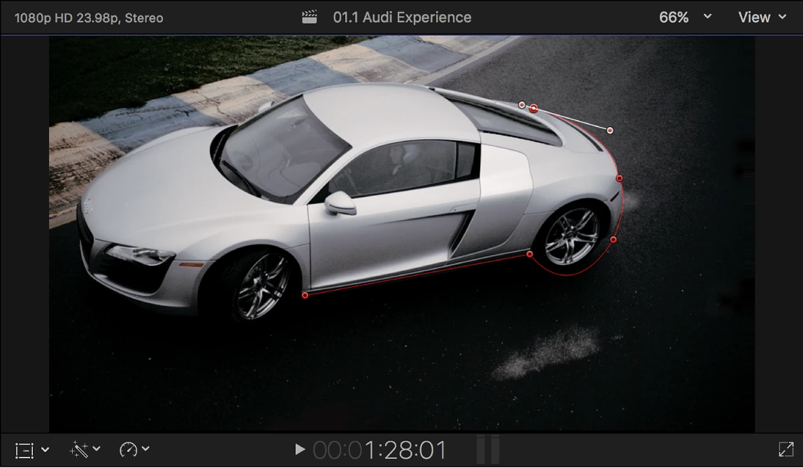
Viewer에서 전경의 윤곽에 제어점을 놓는 실제 화면. 이동하는 경계는 시간별 키프레임으로 보정한다.Apple 공식 Final Cut Pro 사용자 가이드의 실제 화면 · © Apple · 원문 ↗ 사진으로 보는 배치와 연결
A · 위 레이어 / 기둥 경계
B · 아래 레이어 / 다음 장소 위 · A 시장 Draw Mask → 전경 경계의 위치 키프레임
아래 · B 해변 A와 겹쳐 놓기 → A가 사라진 부분에 B 노출
음악·현장음 전환과 별개로 유지 · 필요하면 파도 J-cut
전경 윤곽에 맞춰 A의 보이는 영역을 줄입니다. Feather는 윤곽 위치를 맞춘 뒤 조절합니다. 이 사진은 구조 설명용이며 실제 마스크 추적 결과가 아닙니다.
기둥으로 가린 시장에서 해변으로 넘어가는 A/B 합성 구조. 생성한 연습용 사진이며 특정 크리에이터의 원본 장면·FCP 화면이 아닙니다.
실제 작업 순서 촬영: A에서 전경 물체가 화면을 충분히 덮도록 이동하고, B도 같은 방향·높이·비슷한 속도로 시작한다. 두 컷에 여유를 남긴다. 타임라인: A를 위 연결 클립, B를 아래에 두고 전환 구간만 겹친다. 연결점이 움직이지 않게 구성을 확인한다. A에 Draw Mask를 적용하고 전경 경계 뒤로 아직 남아 있어야 할 A 영역을 지정한다. 지우는 쪽이 반대면 Invert를 확인한다. Control Points에 키프레임을 넣어 경계를 움직인다. 주요 프레임부터 만든 뒤 그 사이를 확인하며 보정한다. 메뉴 표기는 설치 버전과 대조한다. 가림 경계의 초점·움직임 흐림에 맞춰 Feather를 작게 조절한다. 화면 밖까지 마스크를 넘겨 마지막 A 조각이 남지 않게 한다. 정상 속도와 프레임 단위로 점검하고, 소리는 짧은 움직임 소리와 다음 장소 현장음을 연결한다. 장면으로 이해하기 시장 기둥이 왼쪽에서 오른쪽으로 지나간다. A의 보이는 영역을 경계 오른쪽에 남기고 왼쪽부터 B 해변을 드러낸다. B 카메라도 오른쪽으로 움직여 방향을 잇는다.
막히거나 과해질 때 큰 feather는 겹친 두 장소를 유령처럼 만든다. 마스크 외곽이 추적돼도 패럴랙스·밝기·속도가 다르면 연결은 튄다. Draw Mask가 피사체를 자동으로 정밀 추적한다고 가정하지 않는다.
직접 해볼 실습 · 완료 기준 0.5~1초 정도 겹친 두 컷으로 만든다. 마스크 윤곽·검은 틈·A 잔여 조각이 없고 B 진입 방향이 이어지면 완료. 수치는 출발점이다.
기능의 메뉴·조건은 원문 안내 에서 설치 버전으로 확인하세요. 장면 예시·수치·실습·작업 방식의 선택은 이 교재의 제안입니다.
PART 5 · 43 / 83
전체 가림 컷: 마스크 없이 숨기는 연결 렌즈가 벽·옷·어두운 문 안으로 들어가 완전히 가려지는 프레임에서 컷한다. B도 비슷한 색·밝기로 가렸다가 나오면 한 움직임처럼 보인다.
왜 이 방법을 쓰는가 완전 가림 프레임에서는 공간의 세부 정보가 사라진다. 이 순간을 공유하면 정교한 마스크 대신 단순 컷으로 장소를 바꿀 수 있다.
직접 만든 원리 설명용 도식입니다. 실제 앱 화면이나 효과 출력의 복제본이 아닙니다. 사진으로 보는 배치와 연결
A · 기둥이 등장
A · 전경이 지나감
B · 해변으로 도착 전경이 화면을 덮는 순간에 컷을 숨기는 촬영 관계. 생성한 연습용 사진이며 특정 크리에이터의 원본 장면·FCP 화면이 아닙니다.
실제 작업 순서 A 마지막에 화면 전체를 채우는 물체를 확보한다. B 첫 부분도 같은 색·밝기의 전체 가림으로 시작한다. 양쪽이 가장 비슷한 프레임에서 하드 컷하고 같은 이동 방향을 맞춘다. 스코프로 밝기 차이를 줄이고, 소리의 끊김은 J-cut 또는 ambience로 잇는다. 여전히 틈이 보이면 짧은 dissolve를 시험하되 가려진 상태가 충분한지 먼저 본다. 장면으로 이해하기 카페 문틀 안의 어둠으로 들어가서 밤 골목의 검은 재킷 뒤에서 나온다. 검은 프레임은 결과로 확보하고 무조건 Black Generator를 삽입하지 않는다.
막히거나 과해질 때 부분 가림에서는 배경 점프가 보인다. 검게만 맞춰도 카메라 방향이 반대면 관객이 튕기는 느낌을 받는다.
직접 해볼 실습 · 완료 기준 전체 가림 컷 한 개를 하드 컷만으로 완성하고 마스크 방식과 작업량을 비교한다.
기능의 메뉴·조건은 원문 안내 에서 설치 버전으로 확인하세요. 장면 예시·수치·실습·작업 방식의 선택은 이 교재의 제안입니다.
PART 5 · 44 / 83
문·창문·인물 실루엣을 통과하는 전환 창문이나 문 안의 영역을 B로 채우고, 카메라가 그 영역으로 들어가면 B가 전체 화면이 되게 한다. 기본 마스크 와이프보다 원근과 스케일의 연속성이 중요하다.
왜 이 방법을 쓰는가 시청자는 통로의 안쪽을 다음 공간으로 해석한다. B의 크기와 위치가 통로의 움직임과 맞아야 합성 대신 공간 이동처럼 보인다.
직접 만든 원리 설명용 도식입니다. 실제 앱 화면이나 효과 출력의 복제본이 아닙니다. 실제 작업 순서 A에 창·문 내부가 충분히 보이는 컷을 고른다. B는 진입 후의 이동 방향·높이를 맞춘다. A를 위, B를 아래에 배치하고 A에서 문 안쪽을 구멍으로 만드는 마스크를 설정한다. 문 모서리의 원근 변화에 맞춰 마스크 points를 수동 키프레임으로 보정한다. B의 Transform 위치·크기를 키프레임으로 조정해 통로 안의 구도가 점진적으로 전체 화면이 되게 한다. 인물이 경계를 가리면 전경 인물 분리 레이어가 필요하다. 레이어가 복잡하면 Motion 또는 Resolve Fusion의 전용 합성을 고려한다. B가 전체를 채운 프레임에서 합성 A를 종료하고 남은 B를 정상 컷으로 이어간다. 장면으로 이해하기 카페 창문 속 바다가 창으로 다가갈수록 커지고, 창틀이 화면 밖으로 사라지면 실제 바다 장면으로 이어진다. 이것은 독자적인 연습 구성이다.
막히거나 과해질 때 FCP Transform만으로 모든 3D 원근을 해결할 수 있다고 보지 않는다. 카메라가 크게 돌아가거나 전경이 얽히면 복잡한 합성 과제다.
직접 해볼 실습 · 완료 기준 고정 직사각형 통로부터 만들고 이동 통로로 확장한다. 중간 프레임에 B의 검은 테두리나 A의 창틀 조각이 없는지 확인한다.
기능의 메뉴·조건은 원문 안내 에서 설치 버전으로 확인하세요. 장면 예시·수치·실습·작업 방식의 선택은 이 교재의 제안입니다.
PART 5 · 45 / 83
그래픽·동작·방향 매치 컷 원의 모양, 피사체 위치, 동작의 정점 또는 이동 방향을 이어 공간을 바꾼다. 정확한 연결은 대개 촬영 구도와 원본 프레임 선택에서 만든다.
왜 이 방법을 쓰는가 전환 효과가 없어도 눈이 보고 있던 자리에 다음 이미지가 오면 정보가 쉽게 이어진다. 모양이 비슷해도 의미가 무관하면 시각적 농담에 그칠 수 있다.
직접 만든 원리 설명용 도식입니다. 실제 앱 화면이나 효과 출력의 복제본이 아닙니다. 사진으로 보는 배치와 연결
A · 중앙의 커피 원형
B · 중앙의 수영장 원형 커피의 원형과 수영장의 원형을 연결하는 형태 매치. 생성한 연습용 사진이며 특정 크리에이터의 원본 장면·FCP 화면이 아닙니다.
실제 작업 순서 그래픽 매치: A와 B의 주된 모양과 화면 좌표를 맞춘다. 동작 매치: A 동작을 시작하고 B에서 같은 동작을 이어 끝낸다. 방향 매치: 물체가 오른쪽으로 빠지면 B도 오른쪽으로 들어가거나 흐르게 구성한다. Slip으로 B의 내부 구간을 조절해 정점을 맞추고, 필요할 때만 작은 crop·position을 적용한다. 두 장면의 관계를 설명할 한 가지 소리 또는 서사 단서를 남긴다. 장면으로 이해하기 커피 컵의 원형에서 위에서 본 원형 수영장으로, 돌리는 카메라 렌즈에서 도는 자전거 바퀴로 연결한다. 원형이라는 모양과 하루의 이동이라는 의미를 함께 잇는다.
막히거나 과해질 때 눈높이와 중심 위치가 크게 달라지면 매치 전에 시선이 이동해야 한다. 무리한 확대는 화질과 화면 크기의 리듬을 망친다.
직접 해볼 실습 · 완료 기준 효과 없이 그래픽 매치 1개·동작 매치 1개를 만들고 시선 중심을 화면 좌표로 기록한다.
기능의 메뉴·조건은 원문 안내 에서 설치 버전으로 확인하세요. 장면 예시·수치·실습·작업 방식의 선택은 이 교재의 제안입니다.
PART 5 · 46 / 83
휘프 팬: 흐림 속도와 방향으로 잇기 빠른 좌우 카메라 이동의 흐린 구간에서 컷을 숨긴다. 실제 움직임에 맞춘 연결과 편집으로 만든 화면 이동을 구분한다.
왜 이 방법을 쓰는가 선명한 장면이 흐림으로 바뀌었다 다시 선명해지면 서로 다른 공간의 차이를 덜 느낀다. 두 컷의 흐림 방향·속도·밝기가 다르면 오히려 컷이 강조된다.
직접 만든 원리 설명용 도식입니다. 실제 앱 화면이나 효과 출력의 복제본이 아닙니다. 실제 작업 순서 A는 피사체에서 오른쪽으로 빠르게 팬하며 끝내고 B는 같은 방향 팬에서 피사체에 도착한다. 안전하게 반복 촬영한다. 가장 흐린 프레임끼리 연결하고 B의 정지 순간에 도착하는 속도를 조절한다. Retime으로 양쪽 이동 시간만 조금 맞춘다. 인물 동작을 과도하게 압축하지 않는다. 인공 팬은 Transform과 Directional Blur 같은 기본 효과를 키프레임으로 조합해 시험한다. 실제 카메라 흐림과 같지는 않다. 짧은 소리를 이동 구간에만 배치하고 다음 장면 현장음으로 도착감을 준다. 장면으로 이해하기 시장 오른쪽 팬이 해변 오른쪽 팬으로 이어지고 파도에 정지한다. 컷은 같은 방향의 흐린 지점에 두고 정지 이후 1~2초는 화면을 읽게 둔다.
막히거나 과해질 때 좌우 방향이 반대면 충돌감이 생긴다. 편집에서 과도하게 회전·스케일하면 이미지 가장자리 빈 공간이 나타난다.
직접 해볼 실습 · 완료 기준 팬 전환과 단순 컷 버전을 비교한다. 이동 방향이 일치하고 다음 피사체를 빨리 알아볼 수 있으면 완료.
기능의 메뉴·조건은 원문 안내 에서 설치 버전으로 확인하세요. 장면 예시·수치·실습·작업 방식의 선택은 이 교재의 제안입니다.
PART 5 · 47 / 83
줌·돌리·푸시인 연결과 속도 램프 A의 관심 지점으로 들어가 B의 비슷한 지점에서 나오거나 계속 들어간다. 확대 방향, 대상 위치, 가속·감속을 먼저 설계한다.
왜 이 방법을 쓰는가 화면 중심을 향한 속도는 전환에 에너지를 주지만, 확대 중심이 달라지면 피사체가 화면을 가로질러 튄다. 디지털 스케일과 실제 돌리의 원근 변화도 다르다.
직접 만든 원리 설명용 도식입니다. 실제 앱 화면이나 효과 출력의 복제본이 아닙니다. 실제 작업 순서 A와 B의 연결 중심을 정하고 피사체 위치·크기를 맞춘다. A 마지막 가속과 B 첫 감속 구간을 선택한다. 가능하면 촬영 이동을 먼저 활용한다. Transform Scale·Position과 리타임을 작은 범위로 시작한다. 정지 구간은 정상 속도를 유지한다. 화면 가장자리와 원본 해상도를 확인하고 필요한 블러는 짧게 사용한다. Resolve로 넘기기 전 속도 램프·보간·Transform을 FCP에 남길지 구울지 기록한다. 장면으로 이해하기 수영장 물속으로 밀고 들어간 뒤 파도 가까이에서 빠져나온다. 먹먹해지는 소리와 수면 위 복귀를 연결하면 시각 효과에 이유가 생긴다.
막히거나 과해질 때 클립 한가운데 줌 프리셋을 넣는 것만으로 피사체·원근·소리가 연결되지 않는다. 느린 원본을 크게 확대하면 선명도도 줄어든다.
직접 해볼 실습 · 완료 기준 A/B 관심 지점을 같은 좌표에 둔 2컷을 만들고 효과를 꺼도 위치가 이어지는지 검사한다.
기능의 메뉴·조건은 원문 안내 에서 설치 버전으로 확인하세요. 장면 예시·수치·실습·작업 방식의 선택은 이 교재의 제안입니다.
PART 5 · 48 / 83
빛·초점·물결을 이용한 질감 전환 과노출된 빛, 흐려진 초점, 렌즈를 덮는 물방울처럼 일시적으로 정보를 줄이는 순간을 전환 구간으로 쓴다. 의미와 촬영 조건이 맞을 때 선택한다.
왜 이 방법을 쓰는가 밝기나 초점이 잠시 평탄해지면 공간 차이를 숨길 수 있다. 원래 장면의 빛과 무관한 번쩍임은 장면 연결 대신 효과를 드러낸다.
직접 만든 원리 설명용 도식입니다. 실제 앱 화면이나 효과 출력의 복제본이 아닙니다. 실제 작업 순서 A 끝과 B 시작의 밝기 또는 흐림 정도가 비슷한 구간을 찾는다. 짧은 겹침과 opacity 또는 dissolve로 연결한다. 원본 highlight가 이미 잘린 경우 더 밝게 밀기보다 공통 질감 구간을 선택한다. 빛 효과를 추가한다면 실제 빛 방향·색과 같은 흐름으로 제한한다. SDR/HDR 출력에서 최고 밝기와 전환 직후 노출을 확인한다. 장면으로 이해하기 햇빛을 향한 흐린 바다 컷에서 창문 빛에 가려진 실내 컷으로 넘어간다. 다음 장면이 선명해지는 순간부터는 밝기가 안정돼야 한다.
막히거나 과해질 때 흰 프레임과 blur를 길게 쓰면 전환보다 시야를 잃는 시간이 길어진다. water distortion 등 복잡한 굴절은 별도 합성이고 기본 dissolve로 재현된다고 설명하지 않는다.
직접 해볼 실습 · 완료 기준 빛을 활용한 연결과 초점을 활용한 연결을 각각 만들어 후반 정상 화면의 노출 안정성을 확인한다.
기능의 메뉴·조건은 원문 안내 에서 설치 버전으로 확인하세요. 장면 예시·수치·실습·작업 방식의 선택은 이 교재의 제안입니다.
PART 5 · 49 / 83
전환 사운드: 준비·경계·도착 전환 소리는 whoosh 하나를 크게 얹는 작업보다, 다음 공간의 예고와 움직임의 경계, 도착 후 현장음을 나누는 작업이다.
왜 이 방법을 쓰는가 소리가 먼저 다음 장소를 알려주면 화면 전환은 덜 갑작스럽다. 도착 소리가 없으면 효과 뒤에 공간이 비어 보인다.
직접 만든 원리 설명용 도식입니다. 실제 앱 화면이나 효과 출력의 복제본이 아닙니다. 실제 작업 순서 A 끝부분에 B 장소의 현장음을 작게 먼저 시작해 J-cut을 만든다. 마스크 경계나 팬의 가장 빠른 순간에 짧은 움직임 소리를 배치한다. B가 읽히는 순간 발걸음·물·문소리 같은 실제 접촉 소리로 도착을 정한다. 역방향 swell·저역 impact는 장면의 에너지에 필요한 때만 덧붙인다. 음악·전환·현장음의 Roles를 분리해 각각 끈 상태와 전체를 비교한다. 장면으로 이해하기 카페에서 바다로 갈 때 파도 소리를 먼저 들려주고, 기둥 와이프에는 작고 짧은 이동음만 쓴다. 바다 컷이 열리면 바람과 파도가 공간을 채운다.
막히거나 과해질 때 모든 전환에 같은 저역 충격을 넣으면 여행 영상이 예고편처럼 균일하게 무거워진다. 소리로 불안한 마스크 경계를 덮으려 하지 않는다.
직접 해볼 실습 · 완료 기준 화면 효과를 끄고 오디오만으로 장소 이동을 느낄 수 있는지 듣는다. 이어 화면만 재생해 양쪽의 역할을 확인한다.
기능의 메뉴·조건은 원문 안내 에서 설치 버전으로 확인하세요. 장면 예시·수치·실습·작업 방식의 선택은 이 교재의 제안입니다.
PART 5 · 50 / 83
전환이 튈 때: 7가지 비교와 왕복 처리 문제는 마스크뿐 아니라 시선·방향·속도·크기·밝기·질감·소리 중 하나 이상에서 생긴다. 한 번에 모든 효과를 바꾸지 않고 비교 축을 나눈다.
왜 이 방법을 쓰는가 관객은 밝은 경계와 위치 점프를 쉽게 발견한다. 프레임별 마스크 점검과 정상 속도 감각 검수는 서로 다른 문제를 찾는다.
직접 만든 원리 설명용 도식입니다. 실제 앱 화면이나 효과 출력의 복제본이 아닙니다. 실제 작업 순서 효과와 소리를 끄고 A/B 연결 프레임을 비교한다. 시선 중심·방향·속도·크기·밝기·질감·소리 각각을 한 줄로 기록한다. 검은 틈·마스크 잔여·두 번 보이는 피사체는 프레임 단위로 해결한다. 동작이 끊기거나 도착이 늦는 문제는 정상 재생에서 해결한다. 합성 레이어를 왕복할 때는 원본 두 컷을 먼저 보정하고 FCP에서 재합성하거나, 전환 구간을 고품질로 구워 하나의 컷으로 전달한다. 구운 전환은 A/B를 따로 다시 보정할 수 없다는 한계를 기록하고 교체용 원본과 FCP 프로젝트를 보존한다. 장면으로 이해하기 기둥 경계가 맞아도 B 해변이 너무 밝으면 섬광처럼 튄다. 먼저 두 컷의 입력 색관리와 노출을 맞추고 feather를 다시 판단한다.
막히거나 과해질 때 전환 합성이 XML에서 그대로 넘어갈 것이라고 믿으면 왕복 후 다른 화면이 나올 수 있다. 두 카메라의 다른 입력 변환이 포함된 합성을 한 카메라 LOG로 일괄 해석하지 않는다.
직접 해볼 실습 · 완료 기준 마스크·리타임·소리를 포함한 10초 전환 테스트를 Resolve 왕복하고 reference와 비교한다. 실습으로 실제 지원 여부를 기록한다.
기능의 메뉴·조건은 원문 안내 에서 설치 버전으로 확인하세요. 장면 예시·수치·실습·작업 방식의 선택은 이 교재의 제안입니다.
PART 5 · 51 / 83
촬영 현장에서 확보할 전환용 커버리지 편집에 필요한 가림·팬·정상 컷·소리·여유 구간을 촬영 목록에 넣는다. 기존 A7S III와 짐벌, 액션캠, 드론 소재도 같은 기준으로 묶을 수 있다.
왜 이 방법을 쓰는가 흐린 이동 컷만 있으면 장소를 설명할 장면이 부족하다. 전환 컷과 독립적인 공간·인물·디테일 컷을 함께 확보해야 편집이 자유롭다.
직접 만든 원리 설명용 도식입니다. 실제 앱 화면이나 효과 출력의 복제본이 아닙니다. 사진으로 보는 배치와 연결
A · 기둥이 등장
A · 전경이 지나감
B · 해변으로 도착 같은 방향의 움직임과 전경 가림을 확보하는 촬영 예. 생성한 연습용 사진이며 특정 크리에이터의 원본 장면·FCP 화면이 아닙니다.
실제 작업 순서 각 장소에서 와이드·인물 행동·디테일·현장음 4종을 확보한다. 가림 전환: 기둥을 통과하는 A 끝과 B 시작을 같은 방향으로 각각 두 번 이상 촬영한다. 팬 전환: 피사체 정지→빠른 이동, 빠른 이동→피사체 정지를 한 쌍으로 확보한다. 전환 앞뒤 정상 속도와 여유 프레임을 남긴다. 촬영 FPS와 셔터·색 설정을 기록한다. 드론·짐벌·수중 소재는 단순 방향 매치 대안도 남겨 복잡한 전환이 실패해도 이야기 컷으로 편집한다. 장면으로 이해하기 시장 기둥 와이프를 찍은 뒤 반드시 시장 와이드와 바다 와이드를 따로 찍는다. 전환이 실패해도 두 장소의 의미는 남는다.
막히거나 과해질 때 장비 모델만으로 LOG·HDR·프레임레이트를 추정하지 않는다. 같은 이동 방향을 만들려고 무리한 이동을 반복하지 않고 조작 가능한 공간에서 촬영한다.
직접 해볼 실습 · 완료 기준 한 장소 이동에 전환용 A/B 한 쌍과 하드 컷 대안 두 컷을 함께 준비한다.
기능의 메뉴·조건은 원문 안내 에서 설치 버전으로 확인하세요. 장면 예시·수치·실습·작업 방식의 선택은 이 교재의 제안입니다.
PART 6 · 52 / 83
Camera LUT·Color Conform·작업 색공간 Camera LUT는 카메라 LOG 등의 해석·변환에 관여하고, Color Conform은 클립과 프로젝트의 SDR/HDR 차이를 관리한다. 창작 LUT는 의도한 스타일이며 기술 변환과 구분한다.
왜 이 방법을 쓰는가 Library의 Color Processing, Project의 Color Space, 클립의 실제 인코딩을 함께 봐야 한다. LOG를 Rec.709로 바꾸고 같은 변환을 또 적용하면 대개 명암·채도가 잘못된다.
직접 만든 원리 설명용 도식입니다. 실제 앱 화면이나 효과 출력의 복제본이 아닙니다. 실제 작업 순서 Library와 Project 색 설정을 확인한다. Info Inspector에서 실제 카메라 프로파일·Camera LUT를 확인한다. HDR 소재의 Color Conform과 자동 해석을 확인한다. 기술 변환이 한 번 이루어지는 위치를 기록한다. 대표 클립을 스코프와 원본 설정으로 대조한다. 장면으로 이해하기 소니 A7S III라고 항상 S-Log3인 것은 아니다. 드론·액션캠·아이폰도 장비명만으로 LOG·HDR을 확정하지 않는다. 촬영 설정과 파일 정보를 사용한다.
막히거나 과해질 때 파일이 흐리게 보인다고 자동으로 LOG LUT를 적용하지 않는다. 잘못된 입력 색공간에서 노출·채도를 만져 맞추면 나중에 원인을 찾기 어렵다.
직접 해볼 실습 · 완료 기준 서로 다른 카메라 3컷의 입력·변환·프로젝트 출력 색공간을 표로 만든다.
기능의 메뉴·조건은 원문 안내 에서 설치 버전으로 확인하세요. 장면 예시·수치·실습·작업 방식의 선택은 이 교재의 제안입니다.
PART 6 · 53 / 83
파이널컷에서 기본 보정·컷 맞추기 기술 입력을 맞춘 뒤 노출·화이트밸런스·대비·색 편차를 조절하고, 컷 간 일관성 이후 룩을 얹는다. 도구보다 판단 순서가 중요하다.
왜 이 방법을 쓰는가 Color Wheels는 밝기 영역 조절, Curves는 톤과 색 관계, Hue/Saturation Curves는 특정 색 관계를 다루는 데 유용하다. 더 상세한 색채 원리는 별도 색보정 학습자료와 연결된다.
직접 만든 원리 설명용 도식입니다. 실제 앱 화면이나 효과 출력의 복제본이 아닙니다. 실제 작업 순서 대표 기준 컷을 고르고 스코프를 연다. 노출·화이트밸런스·대비를 먼저 정리한다. 이웃 컷의 피부·중립색·하이라이트를 기준으로 맞춘다. 필요한 부분만 마스크로 제한한다. 전체 룩을 넣고 모든 컷의 차이를 다시 본다. 장면으로 이해하기 카페에서 노란 조명은 분위기일 수 있다. 하얀 컵을 무조건 흰색으로 만들기보다 인물 피부와 조명의 따뜻함을 함께 유지하는 방향을 비교한다.
막히거나 과해질 때 Vectorscope의 피부선은 모든 피부를 하나의 값에 맞추는 정답선이 아니다. 피부 밝기·조명·의상을 함께 보며 판단한다.
직접 해볼 실습 · 완료 기준 같은 장소 3컷을 룩 없이 먼저 맞춘 뒤 전체 룩을 추가한다.
기능의 메뉴·조건은 원문 안내 에서 설치 버전으로 확인하세요. 장면 예시·수치·실습·작업 방식의 선택은 이 교재의 제안입니다.
PART 6 · 54 / 83
새 Match Color: 자동 제안 후 판단하기 12.3의 새 Match Color는 카메라·조명·스타일 차이를 맞추는 출발점으로 활용할 수 있다. 결과가 닮았다는 것과 입력 색관리가 올바르다는 것은 다르다.
왜 이 방법을 쓰는가 레퍼런스가 낮인데 대상이 밤이면 장면의 의도까지 지울 수 있다. 비슷한 조명과 피사체의 좋은 기준 컷부터 선택한다.
직접 만든 원리 설명용 도식입니다. 실제 앱 화면이나 효과 출력의 복제본이 아닙니다. 실제 작업 순서 입력 변환을 정리하고 대상 컷과 기준 컷을 고른다. 설치 버전의 Match Color 명령·컨트롤을 사용한다. 피부·검정·흰색·강한 채도를 확인한다. 결과가 과하면 지원되는 강도와 추가 교정으로 조절한다. 다른 장면에는 새로운 기준을 정한다. 장면으로 이해하기 액션캠 해변 컷을 소니 해변 기준에 가깝게 맞춘 뒤 물의 색과 피부를 따로 검수한다. 촬영 조건이 다른 수중 컷까지 같은 규칙을 강제하지 않는다.
막히거나 과해질 때 옛 버전 Match Color와 새 도구의 화면·동작이 같다고 가정하지 않는다. 자동 맞춤은 노이즈·클리핑·사라진 색 정보를 복원하지 않는다.
직접 해볼 실습 · 완료 기준 자동 결과·수동 결과를 나란히 보고 더 자연스러운 것과 이유를 적는다.
기능의 메뉴·조건은 원문 안내 에서 설치 버전으로 확인하세요. 장면 예시·수치·실습·작업 방식의 선택은 이 교재의 제안입니다.
PART 6 · 55 / 83
타이틀·Closed Captions·새 Subtitles 화면에 구운 타이틀, 선택 가능한 Closed Captions 파일, 디자인 가능한 자막은 전달·수정·출력 방식이 다르다. 무엇을 플랫폼에 보내는지 구분한다.
왜 이 방법을 쓰는가 12.3 Generate Captions는 Apple silicon·미국 영어 조건으로 확인됐다. 한국어 작업은 지원 조건을 확인하고 직접 교정하거나 필요한 자막 파일을 가져오는 흐름을 쓴다.
직접 만든 원리 설명용 도식입니다. 실제 앱 화면이나 효과 출력의 복제본이 아닙니다. 실제 작업 순서 대사 텍스트와 타이밍을 교정한다. 납품 방식에 맞는 타이틀·자막·Closed Captions를 선택한다. 배경이 밝거나 복잡한 컷에서 대비·읽는 시간을 확인한다. 출력에서 자막을 구울지 별도 파일로 낼지 확인한다. Resolve 보정에서는 가급적 자막을 제외하고 최종 FCP에서 다시 결합한다. 장면으로 이해하기 여행 광고 문구는 짧은 타이틀, 말하는 인터뷰는 자막으로 구분한다. 같은 글자를 두 군데에서 출력해 이중 자막이 나오지 않게 한다.
막히거나 과해질 때 자막에 룩이나 색보정을 함께 구우면 흰색 글자가 틴트되고 이후 수정이 어렵다. 자동 영어 자막을 검수 없이 납품하지 않는다.
직접 해볼 실습 · 완료 기준 같은 10초에 구운 타이틀과 별도 자막을 만들어 차이를 확인한다.
기능의 메뉴·조건은 원문 안내 에서 설치 버전으로 확인하세요. 장면 예시·수치·실습·작업 방식의 선택은 이 교재의 제안입니다.
PART 6 · 56 / 83
Edit Detection: 완성 영상의 컷 찾기 12.3 이후 Edit Detection은 렌더된 영상의 샷 경계를 찾아 분리하는 기능이다. 원래 라이브러리·원본 handles·효과·타이틀 구조를 되살리는 기능이 아니다.
왜 이 방법을 쓰는가 원본 편집 프로젝트가 없는 영상 분석과 제한된 색보정에 도움이 된다. Hard Cut 중심이며 페이드·디졸브·플래시를 정확히 구분하는지 직접 확인한다.
직접 만든 원리 설명용 도식입니다. 실제 앱 화면이나 효과 출력의 복제본이 아닙니다. 실제 작업 순서 분석할 렌더 영상의 복제본을 준비한다. 설치 버전의 Detect and restore edits 공식 절차로 분석한다. 표시된 경계의 오탐·누락을 검수한다. 확정한 경계로 분리해 컷별 작업을 진행한다. 장면으로 이해하기 분석용 여행 영상에서 컷 길이를 조사할 수 있다. 하지만 인물 앞에 구워진 흰 타이틀이 있으면 분리 후에도 같은 픽셀에 남는다.
막히거나 과해질 때 효과 플래시가 컷처럼 보일 수 있고 디졸브가 한 경계로 복원되지 않을 수 있다. 원본 LOG 보정과 완성 SDR 영상 보정은 정보 범위가 다르다.
직접 해볼 실습 · 완료 기준 Hard Cut 3개·디졸브 1개·플래시 1개가 있는 시험 영상을 분석하고 결과를 기록한다.
기능의 메뉴·조건은 원문 안내 에서 설치 버전으로 확인하세요. 장면 예시·수치·실습·작업 방식의 선택은 이 교재의 제안입니다.
PART 6 · 57 / 83
마스터·시청용 출력·최종 검수·보관 편집 중간 교환용 고품질 파일과 최종 시청용 파일의 목적을 나눈다. ProRes 계열은 중간 작업에, H.264/HEVC는 요구에 맞는 배포에 사용할 수 있다.
왜 이 방법을 쓰는가 비트레이트가 높아도 잘못된 색 태그·FPS·자막·오디오 구성은 해결되지 않는다. 원본 연결 상태와 전체 재생이 최종 기준이다.
직접 만든 원리 설명용 도식입니다. 실제 앱 화면이나 효과 출력의 복제본이 아닙니다. 실제 작업 순서 Optimized/Original로 전환하고 미디어·폰트·효과 누락을 확인한다. Export File에서 비율·FPS·색공간·오디오를 확인한다. 짧은 구간으로 출력 테스트한 뒤 전체를 출력한다. 새 파일의 앞·중간·끝과 어려운 장면을 확인하고 전체를 재생한다. 프로젝트·원본·XML·렌더·폰트와 재현 정보를 함께 보관한다. 장면으로 이해하기 SNS용 작은 파일과 보관용 마스터를 따로 만든다. 색 차이가 나면 앱·태그·뷰어 변환을 확인한 뒤 보정 자체를 바꿀지 판단한다.
막히거나 과해질 때 Cache·렌더·Proxy 삭제는 원본 삭제와 구분한다. 라이브러리 자동 백업은 외부 음악·폰트·원본·플러그인을 전부 보존하지 않는다.
직접 해볼 실습 · 완료 기준 최종 출력 파일을 다시 FCP에 가져와 원본 타임라인과 화면·소리·길이를 비교한다.
기능의 메뉴·조건은 원문 안내 에서 설치 버전으로 확인하세요. 장면 예시·수치·실습·작업 방식의 선택은 이 교재의 제안입니다.
PART 7 · 58 / 83
실제 장면 분석: 관찰과 재현을 구분하기 첨부된 shivawatanabe의 “Timeless Beauty JAPAN…” 화면 녹화에서 직접 확인한 컷을 분석한다. 아래 시간은 원작 타임코드가 아니라 제공된 6.74초 녹화의 경과 시간이다.
왜 이 방법을 쓰는가 멋있어 보인다는 인상 대신 컷 길이·레이어·시선 위치·음악의 밀도를 기록해야 자신의 소재로 재현할 수 있다. 완성본에서 보이는 현상만으로 원 제작자의 편집 앱이나 프로젝트 구조를 단정할 수는 없다.
직접 만든 원리 설명용 도식입니다. 실제 앱 화면이나 효과 출력의 복제본이 아닙니다. 녹화에서 측정한 첫 경계들 실제 영상에서 확인한 프레임 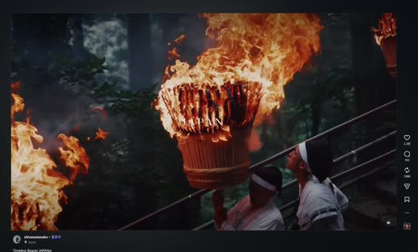
녹화 0.80초 · 의식 장면과 제목 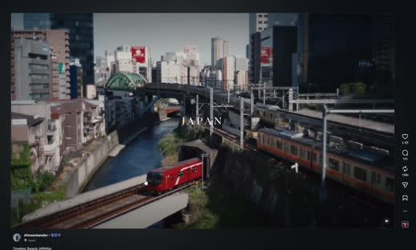
녹화 1.60초 · 공간 소개 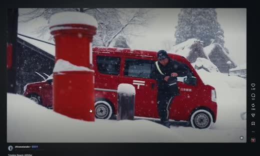
녹화 2.50초 · 빠른 교체 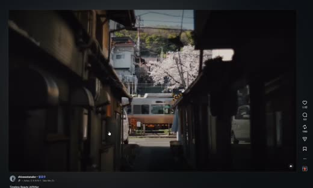
녹화 2.80초 · 빠른 교체 제공된 화면 녹화의 제한된 분석용 발췌. 화면에 표시된 제작자 shivawatanabe / Timeless Beauty JAPAN…. 원작 전체나 원작 타임코드가 아니다.
실제 작업 순서 녹화 초반에는 불꽃·의식 장면과 JAPAN 타이틀이 유지된다. 약 1.13초에는 강·도시·붉은 열차가 보이는 컷으로 바뀌고 약 2.27초까지 머문다. 약 2.27초부터는 한 화면씩 빠르게 교체되는 몽타주가 시작된다. 화면을 여러 칸으로 동시에 나누는 그리드 효과와 구분한다. 이후 주요 컷 간격은 녹화 30fps 기준 약 4·5·6프레임, 즉 0.13·0.17·0.20초다. 같은 길이만 반복하지 않고 약간의 차이가 있다. 도시·열차·자연·거리처럼 서로 다른 소재가 교차하지만 화면 비율과 주요 피사체의 읽기 쉬운 배치를 유지한다. 모든 컷 경계에 복잡한 마스크가 필요한 구조는 아니다. 음악의 촘촘한 펄스와 시각 변화가 함께 진행된다. 화면 녹화의 오디오 지연 가능성이 있어 모든 컷이 특정 킥에 프레임 단위로 일치한다고 단정하지 않는다. FCP 재현에서는 음악을 유지하고 Primary Storyline에 짧은 범위들을 연속 배치한다. 첫 긴 컷과 빠른 연속 컷의 대비부터 만든다. 장면으로 이해하기 긴 도입 컷 → 1초 안팎의 공간 소개 → 4~6프레임 컷 연속이라는 대비가 핵심이다. 이 짧은 인트로를 3~4분 본편의 시작에 쓰더라도 전체를 같은 속도로 편집할 필요는 없다.
막히거나 과해질 때 제공된 녹화는 원작 전체가 아니다. 원작의 시작·결말, 정확한 BPM, 사용 프리셋을 추정해 사실처럼 쓰지 않는다. Sam Kolder·Brandon Li·경식스필름의 작품과도 혼동하지 않는다.
직접 해볼 실습 · 완료 기준 자신의 여행 소재 10컷으로 긴 컷 2개와 빠른 몽타주를 만든다. 타이틀을 제거하고도 장소와 리듬이 읽히는지 본다.
PART 7 · 59 / 83
짧은 비트 몽타주 인트로를 FCP에 배치하기 첨부 사례처럼 짧은 컷을 음악 펄스에 맞춰 연속 배치하는 인트로를 만든다. 길이는 본편 분량과 별개다. 3~4분 본편 앞의 몇 초에도 사용할 수 있다.
왜 이 방법을 쓰는가 효과를 찾기 전에 음악 기준점·컷 길이·소재의 순서를 정해야 한다. 빠르게 지나가도 알아볼 수 있는 장면을 고르고 긴 컷과 대비하면 인트로가 읽힌다.
직접 만든 원리 설명용 도식입니다. 실제 앱 화면이나 효과 출력의 복제본이 아닙니다. 실제 Final Cut Pro 화면으로 확인 Apple 공식 가이드에서 가져온 실제 화면입니다. 이미지를 누르면 크게 볼 수 있습니다. 앱 버전·언어에 따라 표시가 다를 수 있습니다.
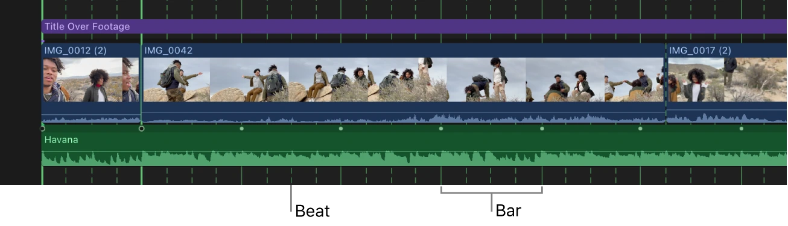
확대한 음악 클립의 마디와 점선 박자 그리드. 짧은 컷 경계를 잡는 출발점이다.Apple 공식 Final Cut Pro 사용자 가이드의 실제 화면 · © Apple · 원문 ↗ 실제 two-up Viewer. 컷 양쪽 프레임을 동시에 보며 나가는 동작과 들어오는 동작을 비교한다.Apple 공식 Final Cut Pro 사용자 가이드의 실제 화면 · © Apple · 원문 ↗ 실제 작업 순서 최종 Project의 FPS를 먼저 정한다. 녹화의 4~6프레임을 다른 FPS 프로젝트에 그대로 복사하면 시간 길이가 달라진다. 음악의 사용할 부분을 정하고 지원 버전에서 Beat Detection을 표시한다. 자동 그리드를 듣고 검수하고 더 촘촘한 타격은 M 마커로 보완한다. 읽기 쉬운 와이드·명확한 동작·색이나 형태가 강한 디테일 8~16컷을 Favorites 범위로 모은다. 흐릿한 중간 동작은 피한다. Primary Storyline에 E로 차례로 추가한다. 클립을 선택하고 Control-D로 길이를 입력한다. 30fps 연습이면 4·5·6프레임을 비교하되 실제 음악 기준 경계에 맞춘다. 음악의 누적 박 위치를 프로젝트 프레임으로 환산해 각 경계를 맞춘다. 매 컷을 독립적으로 반올림해 누적 싱크가 밀리지 않게 한다. T 도구의 Slip으로 컷 길이를 유지하며 클립 내부의 가장 알아보기 쉬운 순간을 찾는다. 롤로 컷 배분을 바꾸면 다음 마커와도 비교한다. JAPAN 같은 제목은 초반 긴 컷 위 Connected Title로 두고 빠른 몽타주 진입 전에 끝내는 안을 시험한다. 기본 하드컷부터 보고 필요할 때만 플래시·줌을 추가한다. 인트로 뒤에는 인물·장소를 충분히 보여주는 긴 컷을 배치해 본편의 새로운 호흡을 연다. 장면으로 이해하기 연습안: 제목이 있는 긴 컷 2개 → 약 0.13~0.20초의 10컷 → 3초 이상의 장소 소개. 이는 첨부 클립의 리듬 관계를 응용한 새 설계이며 원작의 보이지 않는 다음 장면을 설명한 것은 아니다.
막히거나 과해질 때 “4프레임” 자체가 스타일은 아니다. 음악과 FPS에 따라 길이가 달라진다. 매 컷마다 줌·화이트 플래시를 넣으면 피사체와 박자 둘 다 흐려질 수 있다.
직접 해볼 실습 · 완료 기준 하드컷만 있는 버전과 효과를 넣은 버전을 비교한다. 무음으로도 소재가 읽히고 음악만 들어도 편집 경계가 납득되는지 확인한다.
기능의 메뉴·조건은 원문 안내 에서 설치 버전으로 확인하세요. 장면 예시·수치·실습·작업 방식의 선택은 이 교재의 제안입니다.
PART 7 · 60 / 83
공개 템플릿 분석: 필름 창·빛샘·타이포 Light [SN]의 “roll film landscape” 공개 미리보기를 직접 확인했다. 둥근 필름 창, 스크래치·먼지, 밝은 노출 플래시, 사진을 드러내는 글자 형태가 반복되는 구조다.
왜 이 방법을 쓰는가 컷마다 새로운 전환을 만들기보다 화면의 외곽 틀과 질감을 유지하면 다양한 여행 소재를 한 시리즈처럼 묶을 수 있다.
직접 만든 원리 설명용 도식입니다. 실제 앱 화면이나 효과 출력의 복제본이 아닙니다. 실제 Final Cut Pro 화면으로 확인 Apple 공식 가이드에서 가져온 실제 화면입니다. 이미지를 누르면 크게 볼 수 있습니다. 앱 버전·언어에 따라 표시가 다를 수 있습니다.
실제 Video Animation Editor. 시간에 따른 효과 변화 위치를 확인한다.Apple 공식 Final Cut Pro 사용자 가이드의 실제 화면 · © Apple · 원문 ↗ 사진으로 보는 배치와 연결 필름 창을 자신의 여행 이미지에 적용하는 재구성 예 · 생성 이미지 사용. 생성한 연습용 사진이며 특정 크리에이터의 원본 장면·FCP 화면이 아닙니다.
실제 영상에서 확인한 프레임 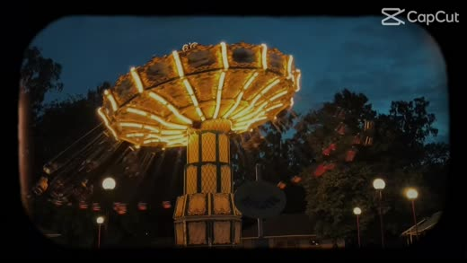
4초 · 둥근 필름 창 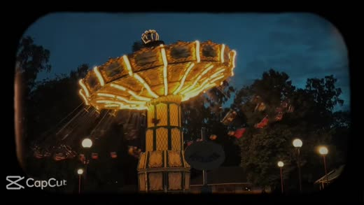
5.2초 · 물결과 타이포 창 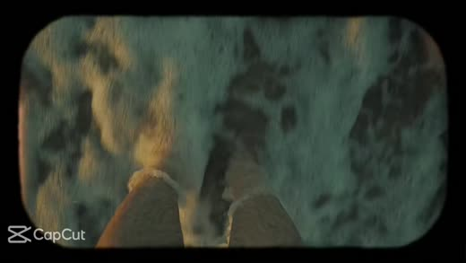
18초 · 밝은 노출 프레임 Light [SN] / roll film landscape · CapCut 공개 미리보기 분석용 발췌. 원문 링크에서 전체 예시 확인. 시간은 확보한 미리보기 파일 기준.
실제 작업 순서 관찰: 첫 약 3초는 밝은 필름 바탕과 가장자리 퍼포레이션이 유지된다. 이후 놀이기구·물결·노을 같은 여행 장면이 둥근 창 안에 교체된다. 관찰: 약 5초대에는 물결 영상 위의 큰 숫자형 모양이 보인다. 9초대에는 밝은 창과 원형 구멍이 나오고 18초대에는 노란 노출 프레임이 화면을 덮는다. FCP 재현 제안: Primary Storyline에는 사진·영상을 놓고 크롭과 Scale로 창 안을 채운다. 바깥에 검정 여백을 남기고 Shape Mask 또는 Draw Mask로 모서리 형태를 만든다. 질감은 사용 권한이 있는 필름 오버레이를 위에 연결한다. 검은 바탕 오버레이는 Screen 등 합성 모드를 비교하되 원본 종류에 맞춰 선택한다. 전환 직전·직후 2~4프레임 정도의 밝은 단색이나 빛샘을 시작값으로 시험한다. 이 수치는 재현 실습 제안이며 원 템플릿의 정확한 키프레임 값이 아니다. 타이포 창은 알파가 있는 문자 매트나 적절한 텍스트 마스크 구조로 만든다. 복잡한 질감을 먼저 넣지 말고 영상 창과 컷의 타이밍부터 맞춘다. 장면으로 이해하기 롱폼 전체를 같은 필름 창으로 제한하기보다 출발 인트로·회상·엔딩 크레딧처럼 목적 있는 한 구간에 적용할 수 있다. 모바일 세로로 응용하면 글자와 창의 크기를 다시 설계한다.
막히거나 과해질 때 공개 페이지의 사용 수는 특정 템플릿의 수치다. Reels·Shorts 전체의 유행 순위를 조사한 결과로 확대하지 않는다. 플러그인 구매가 필수인 레시피도 아니다.
직접 해볼 실습 · 완료 기준 자신의 여행 5컷으로 검정 창 유지 버전과 프레임 없이 전체 화면으로 보여주는 버전을 비교한다.
PART 7 · 61 / 83
공개 템플릿 분석: 컷아웃을 겹치는 도시 몽타주 “Fast Cutout” 공개 미리보기는 뉴욕 거리·표지판·택시·지하철·다리·빌딩을 빠르게 연결한다. 제목과 태그만 보고 분석하지 않고 미리보기의 장면을 확인했다.
왜 이 방법을 쓰는가 컷아웃은 단순한 줌 효과와 다르다. 이전 화면이 남아 있는 동안 다음 피사체나 장면 일부가 먼저 나타나며, 곧 다음 화면으로 넘어가는 관계를 설계해야 한다.
직접 만든 원리 설명용 도식입니다. 실제 앱 화면이나 효과 출력의 복제본이 아닙니다. 실제 Final Cut Pro 화면으로 확인 Apple 공식 가이드에서 가져온 실제 화면입니다. 이미지를 누르면 크게 볼 수 있습니다. 앱 버전·언어에 따라 표시가 다를 수 있습니다.
Effects Browser에서 Magnetic Mask를 클립으로 가져오는 화면. 피사체 분리의 출발점이다.Apple 공식 Final Cut Pro 사용자 가이드의 실제 화면 · © Apple · 원문 ↗ 실제 Video Animation Editor. 시간에 따른 효과 변화 위치를 확인한다.Apple 공식 Final Cut Pro 사용자 가이드의 실제 화면 · © Apple · 원문 ↗ 사진으로 보는 배치와 연결
A · 위 레이어 / 기둥 경계
B · 아래 레이어 / 다음 장소 위 · A 시장 Draw Mask → 전경 경계의 위치 키프레임
아래 · B 해변 A와 겹쳐 놓기 → A가 사라진 부분에 B 노출
음악·현장음 전환과 별개로 유지 · 필요하면 파도 J-cut
전경 윤곽에 맞춰 A의 보이는 영역을 줄입니다. Feather는 윤곽 위치를 맞춘 뒤 조절합니다. 이 사진은 구조 설명용이며 실제 마스크 추적 결과가 아닙니다.
A/B 겹침과 마스크를 이해하기 위한 생성 사진 재구성. 생성한 연습용 사진이며 특정 크리에이터의 원본 장면·FCP 화면이 아닙니다.
실제 영상에서 확인한 프레임 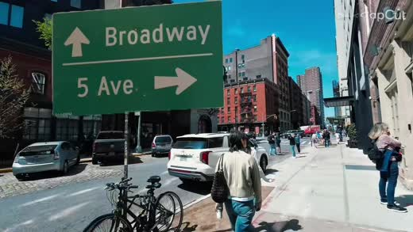
0.65초 · 거리 위 피사체 겹침 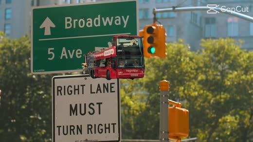
1.45초 · 표지판과 다음 도로 겹침 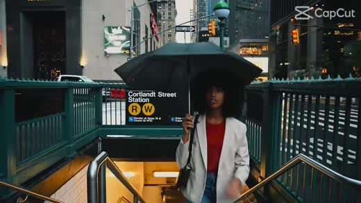
4.2초 · 지하철 장면과 다음 인물 겹침 Fast Cutout / CapCut 공개 미리보기의 분석용 발췌. 시간은 확보한 미리보기 파일 기준. 원 제작자의 작업 파일·도구는 확인하지 않았다.
실제 작업 순서 관찰: 도입에는 도심 거리, 이어 Broadway 표지판, 택시가 있는 도로, Times Square, 지하철 출입구, 다리와 빌딩이 이어진다. 관찰: 서로 다른 화면의 일부가 겹치는 짧은 경계를 사용하고 도시의 직선·표지판·차량을 강한 시각 기준으로 삼는다. 정적인 여행 풍경만 나열하는 방식과 다르다. FCP 재현 제안: A를 아래에, B를 Connected Clip으로 위에 놓고 짧게 겹친다. B의 강한 피사체를 Draw Mask나 Magnetic Mask로 분리한다. 마스크된 B를 먼저 보여준 뒤 전체 B로 바꾸는 구조를 만든다. Transform의 Scale·Position은 도착 화면의 피사체 위치에 맞추고 필요하면 키프레임을 준다. 윤곽이 복잡하거나 블러가 큰 부분은 완벽한 피사체 추적보다 자연스러운 가림을 선택한다. 마스크 오류가 드러나면 중간 프레임을 줄이거나 다른 소재로 교체한다. 연속 사용 시 마스크의 등장 방향과 크기를 바꾼다. 하드컷·잠깐의 관찰 컷과 섞어 모든 경계가 같은 효과가 되지 않게 한다. 장면으로 이해하기 시장 사람을 분리해 해변 화면 위에 잠시 등장시킨 다음 해변의 전체 화면으로 확장하는 안을 연습한다. 이는 원 템플릿의 파일·설정을 복제한 것이 아니라 관찰한 겹침 관계를 응용한 설계다.
막히거나 과해질 때 템플릿 제목의 “Fast”나 “speedramp” 태그만으로 모든 경계에 속도 램프가 사용됐다고 단정하지 않는다. 완성본만으로 원 제작자의 정확한 마스크 도구는 확인할 수 없다.
직접 해볼 실습 · 완료 기준 두 컷으로 6~12프레임 겹침을 시험한다. 마스크된 B의 등장과 전체 B의 교체가 한 번의 전환으로 보이면 긴 본편의 중요한 장소 이동에 적용한다.
PART 7 · 62 / 83
분할 화면·포토 콜라주를 여행 장면에 적용하기 하나의 장면을 빠르게 교체하는 몽타주와 여러 장면을 동시에 보여주는 분할 화면은 다른 편집이다. 아래는 자신의 여행 소재로 만드는 재현 실습이다.
왜 이 방법을 쓰는가 동시에 다른 정보를 보여줄 수 있지만 시선의 우선순위를 설계하지 않으면 작은 화면 여러 개만 남는다.
사진으로 보는 배치와 연결 FCP 레이어: 인물 / 장소 / 디테일 클립을 같은 시간에 연결하고 각각 Crop·Transform으로 패널 위치를 지정합니다. 아래 배경은 검정이나 여백입니다.
3패널과 사진 콜라주 구조 · 생성 사진을 이용한 실습안. 생성한 연습용 사진이며 특정 크리에이터의 원본 장면·FCP 화면이 아닙니다.
실제 작업 순서 9:16 Project를 별도로 만들고 기준 Gap 또는 배경 위에 3개의 Connected Clip을 같은 구간으로 놓는다. 각 클립에 Crop과 Transform을 사용해 상·중·하 3개 패널을 만든다. 사람 얼굴·손·풍경이 각 패널에서 읽히게 한다. 큰 박에는 모든 패널, 중간 박에는 한 패널만 교체하는 안을 비교한다. 같은 시점의 세 화면과 서로 다른 시간의 콜라주를 구분한다. 흰 여백·사진 테두리·회전을 사용하면 포토 콜라주 인상이 된다. Rotation과 Scale의 키프레임은 등장 구간에만 적용한다. 롱폼에는 세로 구성을 그대로 붙이기보다 가로 화면 안의 두 장소·두 행동을 비교하는 짧은 구간으로 다시 설계한다. 장면으로 이해하기 시장 인물·바다·커피의 세 패널을 놓고 가운데 인물만 먼저 바꾼다. 한 화면씩 바꾸는 첨부 인트로와 어떤 시선 차이가 생기는지 비교한다.
막히거나 과해질 때 동시 패널의 인물 얼굴을 작게 만들거나 모든 패널을 같은 순간에 빠르게 교체하면 정보를 읽기 어렵다. 특정 최근 영상의 관찰 결과가 아닌 구성 실습임을 구분한다.
직접 해볼 실습 · 완료 기준 전체 화면 몽타주와 3분할 버전을 같은 음악에 만들어 모바일에서 피사체를 알아볼 수 있는지 비교한다.
기능의 메뉴·조건은 원문 안내 에서 설치 버전으로 확인하세요. 장면 예시·수치·실습·작업 방식의 선택은 이 교재의 제안입니다.
PART 7 · 63 / 83
아웃트로 레시피: 여운·순환·다음 행동 끝은 음악이 끊기는 자리가 아니라 영상의 질문과 감정을 마무리하는 자리다. 긴 영화식 여운, 반복 재생, 브랜드 안내 중 목적을 먼저 고른다.
왜 이 방법을 쓰는가 새 정보를 끝없이 추가하면 끝났다는 느낌이 사라진다. 반복형 끝은 시작으로 돌아갈 연결 조건을, 안내형 끝은 읽을 시간을 준비한다.
직접 만든 원리 설명용 도식입니다. 실제 앱 화면이나 효과 출력의 복제본이 아닙니다. 실제 작업 순서 여운형: 마지막 행동 완료 → 현장음이 남는 안정 컷 → 짧은 잔향·페이드. 음악을 줄일 시점을 먼저 정한다. 순환형: 마지막 움직임·소리·구도를 첫 프레임과 맞춘다. 반복 경계의 중복 프레임과 오디오 클릭을 검사한다. 브랜드 안내형: 결과 장면 → 짧은 로고·안내 → 충분한 읽기 시간. 플랫폼별 안내 목적에 맞춘다. 타이틀은 인트로와 같은 글꼴·위치 규칙을 쓰고 새로운 스타일을 마지막에 갑자기 도입하지 않는다. 최종 출력 후 처음과 끝을 붙여 재생해 순환·무음·검은 프레임을 확인한다. 장면으로 이해하기 부산 영상은 바다를 바라보는 인물의 숨과 파도를 남기는 여운형으로 끝낼 수 있다. 세로 reel에서는 같은 파도 움직임이 첫 물속 컷으로 이어지는 순환형을 별도로 만든다.
막히거나 과해질 때 모든 영상이 seamless loop일 필요는 없다. 끝을 시작과 맞추느라 이야기의 결말을 없애면 영상 목적이 흐려진다.
직접 해볼 실습 · 완료 기준 한 본편에 여운형·순환형 두 엔딩을 붙이고 마지막 5초가 무엇을 정리하는지 비교한다.
기능의 메뉴·조건은 원문 안내 에서 설치 버전으로 확인하세요. 장면 예시·수치·실습·작업 방식의 선택은 이 교재의 제안입니다.
PART 7 · 64 / 83
한 곡 전체의 여행 영화: 장면과 에너지를 설계하기 3~4분 한 곡 본편은 짧은 인트로를 늘인 결과가 아니다. 음악의 큰 구간마다 공간·인물·행동·변화를 맡기고 빠른 몽타주와 관찰할 시간을 교대로 만든다.
왜 이 방법을 쓰는가 동일한 컷 길이와 전환을 수백 번 반복하면 장면의 의미가 사라진다. 각 시퀀스가 무엇을 보여주는지 먼저 정하면 복잡한 전환을 어디에 넣을지도 결정된다.
직접 만든 원리 설명용 도식입니다. 실제 앱 화면이나 효과 출력의 복제본이 아닙니다. 3분 30초 한 곡 연습 지도 · 음악에 맞춰 조정 실제 작업 순서 한 곡 전체를 놓고 프레이즈와 밀도 변화를 마커로 기록한다. 초 단위 비율을 먼저 고정하지 않는다. 도입은 대표 장면과 장소의 감각을 연다. 첫 전개는 와이드→인물→행동으로 관객이 공간을 이해하게 한다. 후렴에서는 움직임·색·방향의 연결로 에너지를 높인다. 브레이크에는 행동의 앞뒤·표정·현장음을 남겨 관찰할 시간을 만든다. 두 번째 상승은 첫 후렴과 다른 장소·날씨·시점으로 변화를 만든다. 같은 강도의 몽타주를 반복하기보다 의미를 확장한다. 마지막은 대표 이미지나 해결된 행동으로 귀결한다. 종결음의 잔향과 현장음을 유지해 감정이 끝날 시간을 준다. 음악을 연장하거나 두 곡을 쓰면 챕터 수와 호흡도 다시 설계한다. 씬 경계와 곡 경계를 무조건 일치시킬 필요는 없다. 장면으로 이해하기 시장 시퀀스에서 골목 와이드→주문→조리→손에 받은 음식→먹는 반응을 보여준 뒤 바다로 이동한다. 전경 마스크는 시장에서 해변으로 가는 한 번의 공간 이동에 집중하고, 해변 내부는 파도·발걸음·인물 반응의 컷으로 이어 간다.
막히거나 과해질 때 아래 210초 표는 이 교재가 만든 한 곡 연습안이다. 특정 크리에이터의 영화 분석이나 모든 곡에 적용되는 시간 공식이 아니다.
직접 해볼 실습 · 완료 기준 자신의 전체 음악에 5~8개 시퀀스 목적을 적고 러프컷을 만든다. 효과 없이도 장소 이동과 에너지 변화가 이해되면 전환을 추가한다.
기능의 메뉴·조건은 원문 안내 에서 설치 버전으로 확인하세요. 장면 예시·수치·실습·작업 방식의 선택은 이 교재의 제안입니다.
PART 7 · 65 / 83
롱폼 작품의 공개 발췌 분석: 공중 장면에서 정적인 관찰로 DEPO Film의 Leonardo Dalessandri 작품 페이지에 공개된 Watchtower of Turkey 7초 미리보기를 직접 확인했다. 아래는 이 미리보기에서 관찰한 연결이다. 원작 3분 33초 전체의 구조나 원작 타임코드는 아직 확인하지 못했다.
왜 이 방법을 쓰는가 화려한 공중 촬영 뒤에도 고정된 시점의 작은 대상과 실내를 연결할 수 있다. 장면 크기·움직임·빛의 대비를 살피면 롱폼을 효과만으로 채우지 않는 방법을 배울 수 있다.
직접 만든 원리 설명용 도식입니다. 실제 앱 화면이나 효과 출력의 복제본이 아닙니다. 실제 Final Cut Pro 화면으로 확인 Apple 공식 가이드에서 가져온 실제 화면입니다. 이미지를 누르면 크게 볼 수 있습니다. 앱 버전·언어에 따라 표시가 다를 수 있습니다.
실제 two-up Viewer. 컷 양쪽 프레임을 동시에 보며 나가는 동작과 들어오는 동작을 비교한다.Apple 공식 Final Cut Pro 사용자 가이드의 실제 화면 · © Apple · 원문 ↗ 확보한 7초 미리보기의 경계 실제로 확인한 공개 발췌 프레임 0.30초 · 열기구와 지형 와이드 1.10초 · 열기구 근접 5.15초 · 작은 대상의 관찰
Leonardo Dalessandri / Watchtower of Turkey · DEPO Film 공개 7초 미리보기의 분석용 발췌. 시간은 미리보기 기준이며 원작 타임코드가 아니다.
실제 작업 순서 관찰: 지형과 열기구 와이드에서 약 0.88초에 열기구 천의 근접 화면으로 바뀐다. 1.48초에는 다시 전경의 열기구와 지형이 함께 보인다. 관찰: 약 2.36초에는 공중에 매달린 인물이 지형 앞에 놓이고, 약 3.24초에는 인물과 먼 열기구가 있는 넓은 풍경으로 넘어간다. 같은 공중 소재를 거리·피사체·시점 변화로 연결한다. 관찰: 약 4.80초에는 창밖 도시가 흐린 배경으로 보이고 앞쪽 난간의 누워 있는 개가 강조된다. 약 5.84초에는 빛이 들어오는 실내로 바뀐다. 큰 풍경과 작은 관찰 대상의 대비가 생긴다. 해석: 장소의 웅장함만 반복하지 않고 디테일·생명체·빛을 끼워 넣으면 시각 밀도를 바꾸고 현장 경험을 느끼게 할 수 있다. 이는 편집적 해석이며 감독의 의도 진술이 아니다. FCP 재현 제안: 와이드·근접·중간거리·와이드로 시퀀스를 만들고, 인물이나 작은 대상을 충분히 읽을 수 있는 관찰 컷을 이어 본다. E로 러프컷을 놓고 two-up Viewer와 Roll로 경계를 비교한다. 이 구조를 본편의 브레이크나 두 번째 상승 전의 호흡에 시험한다. 음악의 고조가 계속되는 곳에 무조건 넣지 말고 실제 곡의 밀도와 현장음을 들어 판단한다. 장면으로 이해하기 자신의 부산 본편에서는 해변 드론 와이드→물결 디테일→수영하는 인물→해변 와이드→음식을 기다리는 표정→빛이 들어오는 카페로 응용할 수 있다. 장소나 프레임을 복제하는 대신 장면 크기와 관찰의 대비를 옮긴다.
막히거나 과해질 때 공개 페이지의 7초 홍보 미리보기는 전체 원작의 동일한 순서·연속 구간이라고 확인하지 않았다. 이 발췌만으로 전체 음악의 구조, 사운드 디자인, 원작의 특정 초를 분석 완료로 적지 않는다.
직접 해볼 실습 · 완료 기준 큰 공간 2컷·디테일 1컷·인물 행동 1컷·관찰 컷 1개로 15~25초 시퀀스를 만들고 한 곡 본편의 호흡 구간에 시험한다.
PART 7 · 66 / 83
롱폼 여행 영화: 실제 작품 분석 대상과 확인 상태 Sam Kolder의 Memories from Saudi, Brandon Li의 Hong Kong Strong, 경식스필름의 오사카 여행영상과 Leonardo Dalessandri의 Watchtower of Turkey를 롱폼 분석 대상으로 둔다. 현재 이 환경에서 전체 원본 영상 재생을 확보하지 못한 작품의 씬 분석은 완료로 표시하지 않는다.
왜 이 방법을 쓰는가 작품 소개나 강의 커리큘럼은 장면 분석을 대신할 수 없다. 원작의 컷과 소리를 확인한 뒤 정확한 구간·관찰·FCP 재현을 작성해야 한다.
작품별 확인 상태 · 미완료를 명시 실제 작업 순서 분석할 단위는 전환 한 순간과 그 앞뒤 시퀀스다. 전체 곡의 도입·전개·브레이크·상승·종결에서 그 구간이 맡는 역할을 함께 확인한다. 이미지는 전환 전·경계·도착 프레임을 고른다. 컷 길이, 움직임 방향, 시선 위치, 와이드·디테일 관계, 현장음·음악 전환을 기록한다. 완성본에서 확인한 결과와 FCP에서 가능한 재현 레이어 구조를 나눈다. 원 제작자가 실제로 사용한 프로그램·플러그인·키프레임 값은 직접 증거 없이 확정하지 않는다. 본편 사례는 3~4분에 제한하지 않는다. 더 긴 작품의 여러 챕터·여러 곡 구성도 동일하게 살핀다. 확인 상태표의 미완료 항목은 원본 또는 해당 장면 클립이 재생 가능해진 다음 채운다. 직접 확인한 숏폼 사례와 섞어 완료처럼 보이게 하지 않는다. 장면으로 이해하기 Watchtower of Turkey의 공식 작품 페이지는 3분 33초, 감독·편집 Leonardo Dalessandri, 음악 Ludovico Einaudi의 Experience로 안내한다. 이는 작품 정보 확인이며 원본 장면을 관찰한 분석은 아직 아니다.
막히거나 과해질 때 연출자의 유명한 스타일을 알고 있다는 이유로 특정 작품의 특정 초에 특정 전환이 나온다고 추정하지 않는다. 아래 링크는 작품 접근 경로이지 분석 완료의 증거가 아니다.
직접 해볼 실습 · 완료 기준 전체 음악 구성 연습은 앞 항목에서 진행할 수 있다. 작품별 실제 씬 분석은 원본 재생 확인 후 이 항목에 추가한다.
PART 7 · 67 / 83
최근 스타일 부록을 쓰는 법: 관찰표와 응용 카드 현재 공개 교육 자료에서 확인할 수 있는 전환·인트로 주제를 출발점으로 삼고, 개별 최신 영상은 타임코드와 날짜가 있는 관찰표로 갱신한다. 특정 효과를 올해 가장 유행한다고 단정하지 않는다.
왜 이 방법을 쓰는가 마스크 와이프·휘프·매치·속도 램프는 오래 사용된 기법도 포함한다. 최신 영상의 새로움은 같은 기법을 이야기·음악·텍스트·매체에 어떻게 조합했는지에서 찾을 수 있다.
직접 만든 원리 설명용 도식입니다. 실제 앱 화면이나 효과 출력의 복제본이 아닙니다. 실제 작업 순서 영상 관찰표 필드: 제목 / 공식 URL / 게시일 / 본 시점 / 타임코드 / 장면 관계 / 촬영 움직임 / 소리 / 다음 컷 길이. 응용 카드 1: 전경 가림+현장음 예고 — 여행 공간 이동. 응용 카드 2: 제품 동작 매치+짧은 타이틀 — 브랜드 핵심 행동. 응용 카드 3: 속도 대비+정상 속도 도착 — 에너지 있는 이동과 장소 설명. 응용 카드 4: 작은 텍스트+질감+긴 현장음 — 관찰·기록 분위기. 질감은 장면마다 균일하게 덮기 전에 가독성과 피부를 확인한다. 외부 preset 없이 먼저 기본 도구로 만들고, 반복이 많은 작업만 Motion template·플러그인으로 정리한다. 장면으로 이해하기 하나의 마스크 와이프를 빠른 음악에 넣은 버전과 파도 현장음만 남긴 버전은 다른 느낌이 된다. 효과 이름보다 장면 목적과 소리 설계를 기록한다.
막히거나 과해질 때 오래된 튜토리얼을 최근 유행의 증거로 쓰지 않는다. 공개 강의 목차를 실제 최신 포트폴리오의 컷별 분석으로 바꾸어 말하지 않는다.
직접 해볼 실습 · 완료 기준 이번 달 본 공식 영상 세 개를 관찰표로 기록하고 공통점과 예외를 나눈다. 이후 이 부록에 구체적 영상 링크·타임코드를 추가할 수 있다.
기능의 메뉴·조건은 원문 안내 에서 설치 버전으로 확인하세요. 장면 예시·수치·실습·작업 방식의 선택은 이 교재의 제안입니다.
PART 7 · 68 / 83
전환 15초 실험을 한 곡 본편에 적용하기 마스크 전환 하나와 하드 컷 여러 개, 소리 브리지로 15초 장면을 만든다. 마지막에는 두 컷 보정 후 재합성 또는 구운 전환 반환까지 시험한다.
왜 이 방법을 쓰는가 전환만 따로 성공해도 앞뒤 장면이 읽히지 않으면 영상 안에서는 실패할 수 있다. 짧은 씬 전체에서 촬영·편집·사운드·색·왕복을 연결한다.
직접 만든 원리 설명용 도식입니다. 실제 앱 화면이나 효과 출력의 복제본이 아닙니다. 실제 작업 순서 0~3초: 시장 와이드+현장음. 3~6초: 손의 행동 2컷. 6~8초: 기둥으로 가려지는 이동 A. 8~10초: 같은 방향의 바다 이동 B. 마스크 경계는 이 두 컷의 겹치는 일부에 놓는다. 10~15초: 바다 와이드 또는 인물 반응을 충분히 읽게 둔다. 파도 J-cut→작은 이동음→바다 ambience로 소리를 설계한다. 별도 전달 프로젝트에서 원본 A/B를 Resolve로 보정해 반환하고 FCP 합성을 유지하는 방법을 시험한다. 이미 구운 합성을 선택했다면 그 한계를 기록한다. reference와 왕복본의 시작·끝 프레임, 마스크, 색, 총길이, 소리 싱크를 비교한다. 장면으로 이해하기 15초는 효과를 검증하는 작은 실험 단위다. 완성한 연결을 3~4분 본편의 장소 이동 지점에 넣고 앞뒤 시퀀스의 호흡까지 확인한다. 전체 영상의 목표 길이를 15초나 60초로 고정하지 않는다.
막히거나 과해질 때 타임라인의 15초 설계와 전환의 겹침 길이를 혼동하지 않는다. A/B를 겹치면 총길이가 달라질 수 있으므로 장면별 목표 구간을 보면서 trim한다.
직접 해볼 실습 · 완료 기준 완료 기준: 장소·행동·이동·도착이 이해되고 검은 틈·중복 변환·소리 클릭이 없다. 실제 앱 시험 결과를 체크리스트에 기록한다.
기능의 메뉴·조건은 원문 안내 에서 설치 버전으로 확인하세요. 장면 예시·수치·실습·작업 방식의 선택은 이 교재의 제안입니다.
PART 8 · 69 / 83
동시 작업과 실시간 반영의 정확한 범위 FCP의 컷 길이·순서와 Resolve의 노드·색보정 값이 기본 기능으로 서로 실시간 동기화되는 것은 아니다. 교환 대상은 편집 정보인 XML과 색이 적용된 렌더 미디어다.
왜 이 방법을 쓰는가 편집 기준 타임라인은 FCP, 색보정 기준 프로젝트는 Resolve로 정하면 수정 주도권이 명확해진다. 이 웹 교재는 배포 후 같은 주소에 갱신되지만 앱 내부 작업은 별도 왕복이 필요하다.
직접 만든 원리 설명용 도식입니다. 실제 앱 화면이나 효과 출력의 복제본이 아닙니다. 실제 작업 순서 편집·색·효과·자막·소리의 담당 앱을 표로 정한다. 컷 변경은 새 XML, 색 변경은 새 렌더로 전달한다. 정해진 확인 구간에서 새 버전이 맞는지 비교한다. FCP 원본 편집 Project와 색보정본 조립 Project를 분리해 둔다. 장면으로 이해하기 피부를 더 따뜻하게 바꿨다면 Resolve에서 그 컷을 다시 렌더해 FCP의 보정본을 교체한다. Resolve에서 노드 슬라이더를 움직이는 순간 FCP 화면도 바뀌지는 않는다.
막히거나 과해질 때 같은 파일을 덮어쓰면 항상 즉시 갱신된다는 보장은 없다. 캐시·재연결·프레임 범위 문제가 있어 버전 폴더와 명시적 교체를 기본으로 한다.
직접 해볼 실습 · 완료 기준 색 수정과 컷 수정 각각에 무엇을 다시 전달해야 하는지 한 문장으로 설명한다.
기능의 메뉴·조건은 원문 안내 에서 설치 버전으로 확인하세요. 장면 예시·수치·실습·작업 방식의 선택은 이 교재의 제안입니다.
PART 8 · 70 / 83
세 가지 왕복 방식과 선택 기준 A 원본+XML은 컷별 원본 보정, B 완성 렌더 한 파일은 보이는 화면 유지, C 선택 컷 선보정은 자주 쓰는 소재를 먼저 보정해 FCP에서 편집하는 방식이다.
왜 이 방법을 쓰는가 A는 입력 정보와 컷별 수정이 풍부하지만 conform 검수가 필요하다. B는 효과 유지가 쉽지만 구워진 타이틀·변환·디졸브와 원본 handles를 분리할 수 없다. C는 왕복 횟수를 줄이지만 여러 조명·리타임·컷별 룩의 변화는 다시 처리해야 한다.
직접 만든 원리 설명용 도식입니다. 실제 앱 화면이나 효과 출력의 복제본이 아닙니다. 실제 작업 순서 기본 컷 위주면 A를 먼저 시험한다. FCP 전용 합성·램프가 많고 편집이 확정되면 B 또는 고위험 컷만 구운 혼합 방식을 검토한다. 편집 중 색이 된 소재를 계속 쓰고 싶으면 C를 시험한다. 공통으로 10초 왕복을 먼저 통과한다. 장면으로 이해하기 네 여행 영상에는 A를 기본으로 하고 잔상·복잡한 속도 램프는 별도 처리하는 혼합 흐름을 제안한다. 초기 선별용 룩은 임시로 두고 최종 룩은 Resolve가 담당한다.
막히거나 과해질 때 B를 원본 LOG 작업과 같은 품질 자유도로 설명하지 않는다. C의 graded 파일을 원본 대신 쓰면 RAW·LOG 입력 재조정 자유도는 달라진다.
직접 해볼 실습 · 완료 기준 같은 10초에 일반 컷·리타임·타이틀을 넣고 A/B 중 필요한 자유도를 비교한다.
기능의 메뉴·조건은 원문 안내 에서 설치 버전으로 확인하세요. 장면 예시·수치·실습·작업 방식의 선택은 이 교재의 제안입니다.
PART 8 · 71 / 83
작업 계약: 무엇을 어느 앱에서 끝낼까 두 앱에서 같은 효과를 각각 적용하면 이중 크롭·이중 안정화·이중 LUT가 생길 수 있다. 각 작업의 소유권을 적어 두면 왕복이 단순해진다.
왜 이 방법을 쓰는가 기본 제안은 FCP가 컷·음악·자막·최종 편집 효과를, Resolve가 입력 색관리·컷 맞추기·룩·색 관련 부분 보정을 담당하는 것이다. 복잡한 합성은 별도 예외 목록에 둔다.
직접 만든 원리 설명용 도식입니다. 실제 앱 화면이나 효과 출력의 복제본이 아닙니다. 실제 작업 순서 컷·리타임·크롭·안정화·마스크·LUT·타이틀·오디오별 담당을 적는다. 임시 효과는 전달 전에 꺼지거나 빠지는 버전으로 분리한다. 구울 효과에는 파일명·FPS·색공간·적용 여부를 기록한다. 돌아오는 미디어에 이미 적용된 항목을 FCP에서 다시 켜지 않는다. 장면으로 이해하기 FCP에서 보정 전용 Clean Project를 만들고 최종 자막·현장음·잔상 합성은 Master Project에 남긴다. 색을 다루는 피부 마스크는 Resolve가 담당한다.
막히거나 과해질 때 Adjustment Clip을 껐다고 Camera LUT와 자동 Color Conform까지 꺼진 것은 아니다. 파일의 실제 입력과 FCP 모니터링 해석을 별도로 확인한다.
직접 해볼 실습 · 완료 기준 한 컷의 처리 순서를 입력→편집 효과→색→최종 합성으로 적고 중복 작업을 지운다.
기능의 메뉴·조건은 원문 안내 에서 설치 버전으로 확인하세요. 장면 예시·수치·실습·작업 방식의 선택은 이 교재의 제안입니다.
PART 8 · 72 / 83
왕복 전 준비: 버전·파일·참조 영상 왕복 패키지에는 XML, 원본 접근 경로, 참조 영상, 효과 예외 목록과 기술 정보가 필요하다. XML에는 영상 픽셀 자체가 들어 있지 않다.
왜 이 방법을 쓰는가 파일명·경로·타임코드·FPS가 연결의 단서다. 여러 카메라의 중복 파일명은 원본 폴더와 메타데이터를 함께 사용해 구분한다.
직접 만든 원리 설명용 도식입니다. 실제 앱 화면이나 효과 출력의 복제본이 아닙니다. 실제 작업 순서 FCP에서 편집 Snapshot을 만들고 Clean 전달용 복제본을 만든다. 컷 순서·길이·FPS·해상도·출력 색공간을 기록한다. Reference 영상에 버전명과 읽기 쉬운 시간코드를 넣는다. 전체 오디오 믹스도 참조용으로 보관한다. 원본 디스크 경로와 고위험 요소 목록을 전달 폴더에 적는다. 장면으로 이해하기 Busan_v003_edit.fcpxmld, Busan_v003_reference.mov, exceptions.txt, camera-map.csv처럼 버전을 맞춘다. 원본 파일은 촬영 카드 구조를 보존한 폴더에서 연결한다.
막히거나 과해질 때 Proxy 경로로 XML을 만들거나 사라진 원본을 참조하면 미디어가 오프라인으로 나온다. 단순 FCP 라이브러리 복사로 원본 전달을 대신하지 않는다.
직접 해볼 실습 · 완료 기준 참조 영상만 보고 컷 순서·길이·시간코드를 확인할 수 있는지 검수한다.
기능의 메뉴·조건은 원문 안내 에서 설치 버전으로 확인하세요. 장면 예시·수치·실습·작업 방식의 선택은 이 교재의 제안입니다.
PART 8 · 73 / 83
FCPXML 내보내기와 버전 호환 FCPXML은 컷·클립 참조·메타데이터 등의 구조를 교환한다. 12.0의 XML 갱신은 1.14로 안내됐다. 설치된 Resolve가 지원하는 버전은 별도 확인한다.
왜 이 방법을 쓰는가 최신 XML이 항상 상대 앱의 최신 지원과 같지는 않다. FCP는 현재 형식과 이전 두 버전 중 선택할 수 있으며 무조건 오래된 1.9로 고정하는 방법은 새 구조를 잃을 수 있다.
직접 만든 원리 설명용 도식입니다. 실제 앱 화면이나 효과 출력의 복제본이 아닙니다. 실제 작업 순서 내보낼 Project를 선택하거나 타임라인에 포커스를 둔다. File > Export XML을 실행한다. 메타데이터와 XML 버전을 기록한다. 원본 연결용 파일과 같은 버전명으로 저장한다. Resolve에서 읽지 못하면 지원 버전과 .fcpxmld 번들 처리를 확인한다. 장면으로 이해하기 1.10 이후는 .fcpxmld 번들이 쓰일 수 있다. 앱이 번들을 못 읽는 경우 지원되는 XML 선택 방식·호환 버전으로 다시 내보내기를 확인하고 확장자만 바꾸지 않는다.
막히거나 과해질 때 최신 기능을 구형 XML로 바꾸면 object tracking 등 표현 정보가 달라질 수 있다. 이름과 확장자만 맞추면 호환된다고 판단하지 않는다.
직접 해볼 실습 · 완료 기준 동일한 테스트 Project의 지원 버전 XML을 가져와 누락 항목을 표로 적는다.
기능의 메뉴·조건은 원문 안내 에서 설치 버전으로 확인하세요. 장면 예시·수치·실습·작업 방식의 선택은 이 교재의 제안입니다.
PART 8 · 74 / 83
Resolve 가져오기와 conform: 색보다 먼저 Conform은 가져온 타임라인이 편집 의도와 실제 원본에 정확히 맞는지 확인하는 과정이다. 잘못 연결된 컷을 아름답게 보정해도 결과는 틀린 영상이다.
왜 이 방법을 쓰는가 타임라인의 순서·길이·원본 시작점·속도·프레이밍·전환을 참조 영상과 비교한다. 파일명이 같은 다른 카메라 클립이 연결될 수도 있다.
직접 만든 원리 설명용 도식입니다. 실제 앱 화면이나 효과 출력의 복제본이 아닙니다. 실제 작업 순서 Resolve에서 Project FPS를 결정하고 원본 폴더를 Media Pool에 준비한다. File > Import > Timeline 계열 메뉴에서 XML을 가져온다. 자동 원본 가져오기 사용 여부와 연결 경로를 확인한다. 참조 영상과 컷 수·길이·시작·끝을 비교한다. 크롭·리타임·트랜지션을 따로 확인하고 누락을 기록한다. conform 통과 후 보정을 시작한다. 장면으로 이해하기 파도 컷의 원본 시작점이 1초 다르면 드롭에 맞춘 최고점이 바뀐다. 전체 길이가 같아도 정확히 같은 편집이라는 뜻은 아니다.
막히거나 과해질 때 첫 장면만 맞는다고 전체가 맞는 것은 아니다. 오프라인 파일을 비슷한 이름의 임의 파일로 연결하지 않는다. Import 결과는 설치 버전과 실제 구조에서 시험해야 한다.
직접 해볼 실습 · 완료 기준 12컷을 참조 영상과 대조하고 각 경계 앞뒤 2프레임까지 확인한다.
기능의 메뉴·조건은 원문 안내 에서 설치 버전으로 확인하세요. 장면 예시·수치·실습·작업 방식의 선택은 이 교재의 제안입니다.
PART 8 · 75 / 83
속도 램프·안정화·합성·트랜지션 전달 앱 고유 효과와 복잡한 시간 변화는 XML 교환에서 손실·대체·차이가 생길 수 있다. 통과하는 기능 목록보다 실제 테스트 결과가 기준이다.
왜 이 방법을 쓰는가 단순 컷은 원본+XML로, 고위험 효과는 FCP에서 최종 처리하거나 그 컷만 고품질 렌더로 구워 전달하는 혼합 방식을 쓸 수 있다. 무엇이 구워졌는지 반드시 적는다.
직접 만든 원리 설명용 도식입니다. 실제 앱 화면이나 효과 출력의 복제본이 아닙니다. 실제 작업 순서 타이틀·플러그인·Compound·Multicam·램프·마스크·안정화 목록을 만든다. 일반 컷과 복잡한 컷 각각을 XML로 시험한다. 차이가 나면 최종 FCP 재적용 또는 개별 구운 컷 방식을 선택한다. 구운 컷의 색공간·길이·handles·효과 적용을 기록한다. 분해·flatten은 전달용 복제에서만 한다. 장면으로 이해하기 FCP 인물 잔상 합성은 마스크 결과까지 구워 전달하거나 색보정된 배경·인물을 FCP에서 다시 합성한다. 단순 전체 Freeze처럼 재구성되면 다른 연출이다.
막히거나 과해질 때 구운 LOG·SDR·HDR 컷을 입력 표기 없이 섞으면 잘못된 CST를 적용할 수 있다. Compound를 항상 안전하게 자동 해체할 수 있다고 가정하지 않는다.
직접 해볼 실습 · 완료 기준 램프·크롭·플래시·마스크 4개를 예외 목록으로 만들고 처리 담당을 정한다.
기능의 메뉴·조건은 원문 안내 에서 설치 버전으로 확인하세요. 장면 예시·수치·실습·작업 방식의 선택은 이 교재의 제안입니다.
PART 8 · 76 / 83
Handles·파일 이름·색 적용 범위 Handles는 편집에 쓰는 구간 앞뒤의 여유 프레임이다. 나중에 컷을 늘리거나 디졸브를 만들 수 있게 해주지만 원본 밖의 프레임을 생성하지는 않는다.
왜 이 방법을 쓰는가 정상 속도 24fps에서 24프레임은 1초다. 슬로·역재생·속도 램프에서는 원본 프레임과 타임라인 프레임의 관계가 달라지므로 결과 파일의 실제 범위를 검수한다.
직접 만든 원리 설명용 도식입니다. 실제 앱 화면이나 효과 출력의 복제본이 아닙니다. 실제 작업 순서 재편집 범위를 예상해 앞뒤 handles를 정한다. 예시로 정상 속도 컷에 24~48프레임씩 시험한다. Individual Clips 반환 파일의 시작·끝과 길이를 확인한다. Unique Filename 또는 Shot ID로 중복 사용 컷의 충돌을 막는다. 분리한 두 컷의 서로 다른 보정이 같은 파일에 덮이지 않게 한다. 장면으로 이해하기 같은 C0001 원본을 낮과 밤 느낌으로 두 번 쓰면 shot_003과 shot_014 같은 편집 인스턴스 ID가 도움이 된다. 원본 이름과 타임코드 정보도 보관한다.
막히거나 과해질 때 같은 원본을 쓰는 두 컷을 파일명만 같은 방식으로 렌더하면 서로 덮어쓸 수 있다. handles가 없는 반환본은 밖으로 늘릴 수 없다.
직접 해볼 실습 · 완료 기준 2초 컷에 앞뒤 1초 handles를 붙였을 때 4초 파일이 나오는지 실제 FPS와 함께 확인한다.
기능의 메뉴·조건은 원문 안내 에서 설치 버전으로 확인하세요. 장면 예시·수치·실습·작업 방식의 선택은 이 교재의 제안입니다.
PART 8 · 77 / 83
Resolve 색관리와 최종 보정 설계 원본+XML로 연결했으면 원본의 실제 입력으로, 이미 구운 Rec.709 파일이면 그 구운 출력의 입력으로 관리한다. 원래 카메라가 LOG였다는 이유로 구운 SDR에 LOG 변환을 적용하지 않는다.
왜 이 방법을 쓰는가 입력→작업 공간→교정·룩→출력의 경로를 한 번씩 설계한다. RCM 또는 CST 방식 중 하나를 일관되게 쓰고 자동 입력 추정은 원본 정보와 대조한다.
직접 만든 원리 설명용 도식입니다. 실제 앱 화면이나 효과 출력의 복제본이 아닙니다. 실제 작업 순서 카메라별 촬영 설정·파일 정보를 확인한다. 원본 컷과 구운 컷의 입력을 각각 지정한다. 노출·화이트밸런스·컷 맞추기를 먼저 한다. 피부·배경의 부분 보정 후 전체 룩을 설계한다. 반환 목적의 출력 색공간을 지정하고 대표 컷을 시험 렌더한다. 장면으로 이해하기 소니 원본은 실제 S-Log3/S-Gamut3.Cine로 찍힌 경우 그 입력을, HDR 아이폰은 실제 메타데이터에 맞는 입력을 사용한다. 기종명으로 일괄 지정하지 않는다.
막히거나 과해질 때 Camera LUT, CST, RCM, Output LUT를 겹쳐 기술 변환을 반복하지 않는다. Resolve가 보정할 원본과 FCP 임시 화면의 해석을 구분한다.
직접 해볼 실습 · 완료 기준 색 교재의 입력 색관리 항목과 연결해 3카메라 표를 만들고 출력까지 한 경로로 설명한다.
기능의 메뉴·조건은 원문 안내 에서 설치 버전으로 확인하세요. 장면 예시·수치·실습·작업 방식의 선택은 이 교재의 제안입니다.
PART 8 · 78 / 83
Resolve 반환: Individual Clips + FCPXML 컷별 반환은 색이 적용된 미디어와 새 편집 구조를 함께 돌려보내는 방식이다. Resolve Deliver의 설치 버전에 맞는 Final Cut Pro X용 왕복 프리셋 또는 지원되는 FCPXML 반환 절차를 쓴다.
왜 이 방법을 쓰는가 이름이 비슷한 Final Cut Pro 7 XML과 Final Cut Pro X FCPXML을 혼동하지 않는다. 실제 프리셋과 출력 XML 버전을 시험하며 반환 미디어가 생성됐는지 확인한다.
직접 만든 원리 설명용 도식입니다. 실제 앱 화면이나 효과 출력의 복제본이 아닙니다. 실제 작업 순서 Deliver에서 FCP용 왕복 프리셋을 선택한다. 컷별 렌더 모드·포맷·FPS·해상도·색 태그·handles를 확인한다. Mac 기준으로 ProRes 422 HQ 등 필요한 중간 코덱을 시험한다. 충돌 없는 파일명과 별도 grade_v001 폴더에 렌더한다. 렌더 완료 후 생성된 XML과 미디어를 확인한다. FCP의 새 Event에 File > Import > XML로 가져온다. 장면으로 이해하기 원래 편집 Project는 유지하고 반환본은 Busan_grade_v001로 받는다. 고품질 중간 코덱을 썼어도 LUT 중복과 색 태그 검수가 필요하다.
막히거나 과해질 때 전체 렌더 한 파일과 Individual Clips의 결과를 혼동하지 않는다. 혼합 FPS·리타임·크롭이 어떻게 구워졌는지 반환본에서 확인한다.
직접 해볼 실습 · 완료 기준 돌아온 10초를 원본 편집과 비교해 컷 수·프레임·총길이·그림을 기록한다.
기능의 메뉴·조건은 원문 안내 에서 설치 버전으로 확인하세요. 장면 예시·수치·실습·작업 방식의 선택은 이 교재의 제안입니다.
PART 8 · 79 / 83
FCP 마무리: 반환본·원래 소리·타이틀 결합 새 XML Project의 영상과 원래 Master Project의 소리·타이틀·합성 구조를 검수하며 결합한다. 반환 영상의 모양이 같아도 오디오 역할·플러그인·자막이 모두 복원됐다고 가정하지 않는다.
왜 이 방법을 쓰는가 정확히 같은 시간 기준과 시작점이 있어야 결합이 쉽다. 전체 graded 영상 한 파일을 쓰는 방식은 구조가 단순하지만 컷별 재편집 자유도는 적다.
직접 만든 원리 설명용 도식입니다. 실제 앱 화면이나 효과 출력의 복제본이 아닙니다. 실제 작업 순서 반환 Project의 전체 길이와 시작 시간을 원본에 맞춘다. 원래 음악·현장음·자막을 필요한 구조로 유지 또는 다시 배치한다. 구워진 크롭·안정화·룩을 중복 적용하지 않는다. 원본의 리듬 지점·음악 정점·타이틀 타이밍을 비교한다. 새 마스터 파일을 출력해 다시 확인한다. 장면으로 이해하기 수중 진입의 EQ 자동화와 효과음은 FCP Master에 남겨 두고 graded 영상만 갱신한다. 컷 길이를 바꿨다면 EQ 전환도 같은 장면 위치로 다시 확인한다.
막히거나 과해질 때 그레이딩된 소스에 원본 Camera LUT를 계속 적용하면 이중 변환이다. 반환 미디어에 들어 있는 색 태그와 FCP 프로젝트 해석을 함께 본다.
직접 해볼 실습 · 완료 기준 타이틀의 흰색·피부·수중 고역 복귀·드롭 싱크를 완성 파일에서 확인한다.
기능의 메뉴·조건은 원문 안내 에서 설치 버전으로 확인하세요. 장면 예시·수치·실습·작업 방식의 선택은 이 교재의 제안입니다.
PART 8 · 80 / 83
수정 왕복: 색 변경·트림·새 컷을 나누기 색 변경은 새 렌더, 편집 변경은 새 XML 또는 제한된 수동 교체가 기본이다. 수정 종류마다 새로 할 작업 범위가 다르다.
왜 이 방법을 쓰는가 색만 바뀌면 편집 구조는 그대로다. 컷을 조금 늘리는 변경은 handles 안에서 가능할 수 있다. 새 컷·큰 램프·handles 밖 수정은 다시 원본 연결과 보정이 필요하다.
직접 만든 원리 설명용 도식입니다. 실제 앱 화면이나 효과 출력의 복제본이 아닙니다. 실제 작업 순서 FCP 편집 버전과 Resolve 보정 버전을 따로 올린다. 변경 목록에 Shot ID·수정 종류·시간 범위를 적는다. 색만 바뀐 컷은 grade_v002로 다시 렌더한다. FCP에서 새 반환 XML을 받거나 해당 컷을 명시적으로 교체한다. 편집 변경은 edit_v004 XML로 Resolve 새 타임라인에 가져와 기존 보정을 검토해 적용한다. 변경된 컷뿐 아니라 앞뒤 컷과 오디오를 검수한다. 장면으로 이해하기 shot_007의 피부톤만 바뀌면 1컷 갱신, shot_012를 0.4초 늘리면 handles·마스크 범위 확인, 새 드론 컷을 넣으면 XML·입력 색관리·컷 맞추기를 다시 한다.
막히거나 과해질 때 같은 파일명 덮어쓰기 자동 갱신을 운영 규칙으로 믿지 않는다. Relink는 이름·파일 속성 조건이 맞아야 하며 모든 반환본에 보장되는 교체 수단이 아니다.
직접 해볼 실습 · 완료 기준 색만 수정·24프레임 연장·새 컷 추가 세 가지 요청을 실제 파일로 각각 처리한다.
기능의 메뉴·조건은 원문 안내 에서 설치 버전으로 확인하세요. 장면 예시·수치·실습·작업 방식의 선택은 이 교재의 제안입니다.
PART 8 · 81 / 83
색이 다르게 보일 때의 진단 순서 앱·QuickTime·브라우저의 색 표시 차이는 입력 해석·출력 태그·디스플레이 관리·HDR/SDR·레벨 해석에서 생길 수 있다. 눈에 다르다는 이유만으로 최종 보정을 다시 하지 않는다.
왜 이 방법을 쓰는가 Rec.709 Gamma 2.4 작업 기준과 Apple 뷰어에서의 표시를 구분한다. Rec.709-A는 특정 macOS 표시 목적의 선택지이며 모든 플랫폼 문제의 만능 설정이 아니다.
직접 만든 원리 설명용 도식입니다. 실제 앱 화면이나 효과 출력의 복제본이 아닙니다. 실제 작업 순서 같은 렌더 파일을 FCP와 Resolve에 다시 가져온다. 파일의 색공간·감마 태그와 양쪽 입력 해석을 확인한다. 카메라 LUT·Color Conform·CST·RCM 중복을 확인한다. 스코프로 신호 변화인지 화면 표시 차이인지 구분한다. Video/Full 레벨은 포맷과 메타데이터·표시를 함께 검사한다. 최종 목적의 대표 기기에서 테스트한다. 장면으로 이해하기 렌더를 Resolve에 재가져왔을 때 기준과 신호가 맞고 QuickTime만 다르면 화면 표시 경로를 먼저 조사한다. PC·Mac 모니터의 밝기·색 모드 차이도 분리한다.
막히거나 과해질 때 Data Levels를 무조건 Full로 강제하거나 Rec.709-A를 항상 쓰면 다른 경로에서 더 틀어질 수 있다. True Tone·Night Shift 같은 변화를 포함해 비교 조건을 고정한다.
직접 해볼 실습 · 완료 기준 동일 파일의 스코프·태그·뷰어 차이를 3열 표로 남기고 실제 보정을 바꾸지 않은 상태에서 원인을 찾는다.
기능의 메뉴·조건은 원문 안내 에서 설치 버전으로 확인하세요. 장면 예시·수치·실습·작업 방식의 선택은 이 교재의 제안입니다.
PART 8 · 82 / 83
M3 Pro와 RTX 4080 Super를 함께 쓰는 경우 처음에는 두 앱을 같은 Mac에서 왕복해 변수 수를 줄이는 구성을 제안한다. Resolve를 Windows 데스크톱에서 쓸 때는 미디어 경로·코덱·OS 색 표시를 별도 관리한다.
왜 이 방법을 쓰는가 FCP는 Mac에서 편집하고 Resolve의 무거운 보정은 다른 컴퓨터에서 할 수 있지만 디스크 경로와 출력 코덱 지원이 같다고 가정하지 않는다. Resolve 버전·무료/Studio·OS의 코덱 지원을 확인한다.
직접 만든 원리 설명용 도식입니다. 실제 앱 화면이나 효과 출력의 복제본이 아닙니다. 실제 작업 순서 Mac에서 먼저 10초 왕복을 통과한다. 두 컴퓨터가 접근하는 원본의 폴더 구조를 동일하게 유지한다. Windows Resolve에서 원본을 연결하고 FPS·입력·참조를 대조한다. 설치 버전·OS에서 지원되는 반환 코덱으로 테스트한다. 필요하면 Mac에서 교환용 형식 변환 단계를 명시한다. 장면으로 이해하기 RAW·ProRes RAW 지원은 버전에 따라 달라지므로 과거의 미지원 설명을 그대로 쓰지 않는다. 최신 공식 지원 코덱 목록과 해당 버전 실제 가져오기를 확인하고, 지원되지 않는 소스만 고품질 중간 파일로 변환한다.
막히거나 과해질 때 반환 코덱이 없는데 확장자만 MOV로 바꾸면 해결되지 않는다. 화면 차이를 컴퓨터 성능 차이로 설명하지 않고 색 표시 조건을 검수한다.
직접 해볼 실습 · 완료 기준 같은 파일 1개를 두 컴퓨터에서 읽고 테스트 반환 후 해상도·FPS·색·오디오를 비교한다.
기능의 메뉴·조건은 원문 안내 에서 설치 버전으로 확인하세요. 장면 예시·수치·실습·작업 방식의 선택은 이 교재의 제안입니다.
PART 8 · 83 / 83
최종 실습: 한 곡 여행 본편과 보정 왕복 3~4분 정도의 음악 한 곡 전체를 기준으로 여행 본편을 완성한다. 소재와 음악 구성이 필요하면 연장하거나 두 곡 이상으로 확장한다. 편집은 FCP, 색보정은 Resolve, 마무리는 FCP가 담당한다.
왜 이 방법을 쓰는가 도입 8초, 이동 12초, 바다·수중 20초, 카페·야경 14초, 마무리 6초는 연습용 출발점이다. 음악 구조가 다르면 시간을 바꾼다.
직접 만든 원리 설명용 도식입니다. 실제 앱 화면이나 효과 출력의 복제본이 아닙니다. 실제 작업 순서 원본 30클립에서 12~18개 범위를 선별한다. 핵심 음악 구간 6~10개를 표시하고 러프컷을 만든다. Slip 3회·Roll 2회·J/L-cut 2회를 의도적으로 연습한다. 수중 먹먹한 음악·마스크 합성 1개를 설계한다. 10초 XML 왕복을 통과하고 본편을 Resolve에서 보정한다. FCP에서 타이틀·소리를 결합해 출력한다. 색 1컷 수정·컷 1개 교체를 다시 왕복한다. 장면으로 이해하기 시장→바다→야경을 음악의 전개로 연결한다. 빠른 인트로·관찰 시퀀스·두 번의 상승·종결을 만들고 마스크 전환은 장소 이동에 사용한다. 두 번째 곡을 쓰면 전환 현장음과 새 음악 시작을 함께 검수한다.
막히거나 과해질 때 효과가 어울리지 않으면 최종본에서는 빼고 실습 기록만 남긴다. 많은 기능보다 설명할 수 있는 편집 선택과 정확한 반환이 중요하다.
직접 해볼 실습 · 완료 기준 본편 전체 길이·컷 시작점·음악 싱크가 왕복 전후 동일하다. 색 수정 1컷과 편집 수정 1컷의 업데이트를 각각 수행하고 새 버전이 적용됐음을 확인한다.
기능의 메뉴·조건은 원문 안내 에서 설치 버전으로 확인하세요. 장면 예시·수치·실습·작업 방식의 선택은 이 교재의 제안입니다.
FIND A SOLUTION 지금 생긴 문제로 찾기 기능 이름이 생각나지 않을 때 증상부터 고르세요.
LEARN BY CHANGING 조작 실험실 아래 변화는 원리를 설명하는 계산·도식입니다. FCP의 실제 분석·오디오·영상 출력을 구현한 플러그인이 아닙니다.
① Ripple·Roll·Slip·Slide
타임라인 시간·컷 길이·원본 구간 중 무엇이 바뀌는지 비교하세요. ② BPM·마디·박자
4/4·고정 BPM의 설명용 그리드. 실제 음악은 Beat Detection과 귀로 확인합니다. ③ 원본 FPS와 슬로모션
모든 원본 프레임을 한 번씩 재생하는 속도를 계산합니다. ④ 먹먹한 소리의 고역 감소
단순 1차 low-pass 전달 함수의 크기 응답 예시. 실제 EQ·음악 출력과 다릅니다. ⑤ 반환 파일의 여유 프레임
정상 속도·동일 FPS 기준. 속도 램프·역재생에서는 실제 출력 범위를 확인합니다. ⑥ 화면과 소리의 경계
J-cut·L-cut의 정보 전달 순서. 이동 수치는 제안 실습 범위입니다. HANDOFF CONTRACT 왕복 전달 표 이 표는 지원 보장 목록이 아니라 제안 운영 기준입니다. 설치 버전과 실제 10초 시험으로 통과 여부를 적으세요.
요소 전달 판단 검수·대안 일반 컷·순서·트림 XML 전달의 기본 대상 원본 시작점·길이·FPS를 reference와 비교 Camera LUT·LOG 해석 원본 메타데이터와 입력 계획으로 관리 임시 화면용 변환을 최종에 중복 적용하지 않기 크롭·Transform 지원·해석·구워짐 여부를 시험 한 앱만 최종 담당, 이중 적용 확인 일반 리타임 정확도 시험 후 전달 파일·타임라인 FPS와 원본 사용 구간 검수 속도 램프·보간 고위험 요소 FCP 마무리 또는 개별 렌더 후 구워진 시간 기록 안정화·렌즈 보정 앱별 결과 차이 가능 FCP 재적용 또는 구운 컷, 중복 금지 Compound·Multicam 중첩·활성 앵글 검수 복제 전달용 타임라인에서 단순화·시험 마스크·플러그인·잔상 앱 고유 계산은 그대로 재현을 가정하지 않음 원본 또는 구운 합성 중 의도에 맞게 선택 트랜지션·디졸브 손실·일반 효과로 대체 가능 handles 확보, 최종 FCP 재적용 검토 타이틀·자막 최종 FCP 유지 권장 보정용 영상에 불필요하게 굽지 않기 Roles·오디오 자동화 최종 FCP 믹스 유지 권장 reference 믹스와 최종 타이밍 비교 Resolve 색 노드 렌더 미디어로 반환 FCP에서 같은 보정을 다시 적용하지 않기
3개 ID를 함께 보관 원본 식별(카메라·폴더·파일·타임코드), 편집 인스턴스(Shot ID), 수정 세대(edit_v004 / grade_v002)를 구분합니다. 이름이 같은 다른 카메라 컷과 같은 원본의 다른 룩이 충돌하지 않게 합니다.
패키지 준비 · conform · 수정 왕복
SOURCES & SCOPE 기준 · 출처 · 확인 범위 기존 16쪽 「파이널컷 프로 편집 효율 실전」의 13강을 8부 사전으로 확장했습니다. 공식 문서는 기능 확인에 사용하고, 본문의 장면·실습·작업 설계는 독자적으로 작성했습니다.
Final Cut Pro for Mac: Apple 12.4 공식 릴리스 노트와 현행 사용자 가이드, 2026.10.10 확인. Resolve 왕복 원리: Blackmagic 공식 Colorist Guide 20의 XML conform·Deliver 안내. 현행 앱의 구체적 메뉴·FCPXML·코덱 지원은 설치 버전으로 재시험. 기본 왕복 환경 제안: M3 Pro Mac에서 두 앱 사용, SDR Rec.709부터 10초 시험 후 본편. HDR과 Windows 보정은 별도 조건 검수. 실제 사용자 앱에 접속해 왕복한 결과를 주장하지 않습니다. 교재 웹 기능의 검수와 실제 편집 프로젝트의 왕복 검수는 별개입니다. Apple 공식 가이드의 실제 FCP 화면 16장을 해당 기능에 연결했습니다. 제공 영상과 공개 템플릿의 프레임은 장면 분석을 위한 제한된 발췌이며 제작자·출처를 표시합니다. 생성 사진·레이어 구조·계산 도식은 연습용 재구성입니다. 롱폼 원본 미확인 작품은 분석 완료로 표시하지 않습니다. 확인된 자동 영어 자막·영어 대사 검색의 조건을 한국어 지원으로 확장하지 않았습니다. Apple 릴리스 노트 · Apple 사용자 가이드 · FCPXML 교환 · Blackmagic 공식 교육 · Colorist Guide 20 · 현재 Resolve 코덱·버전 지원
다음 수정은 어디에서? 이 주소를 즐겨찾기해 두고 보충할 항목을 알려주세요. GitHub의 content/book.json 본문과 웹 파일을 수정·배포하면 같은 주소로 갱신됩니다. 대화가 끝난 뒤 자동 집필하는 서비스는 아닙니다.
Final Cut Pro 편집과 왕복 작업 사전 · 2026.10 · 저장소 · 확인 범위